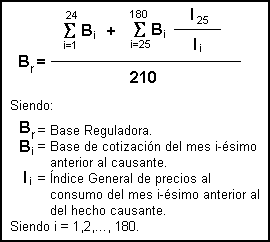

|
Texto Refundido de la Ley General de la Seguridad Social.
(Aprobado por Real Decreto Legislativo 1/1994, de 20 de Junio).
Fecha Publicación BOE: ?????????
Actualizado con Todas las Modificaciones, la última el 06-06-2005
TÍTULO II. RÉGIMEN GENERAL DE
LA SEGURIDAD SOCIAL.
CAPÍTULO I. CAMPO DE APLICACIÓN.
Artículo 97. Extensión.
(Redacción según Ley 50/1998, de 30 de diciembre).
1. Estarán obligatoriamente incluidos en el Régimen General de la Seguridad Social los trabajadores por cuenta ajena o asimilados comprendidos en el apartado 1.a del artículo 7 de la presente Ley.
2. A los efectos de esta Ley se declaran expresamente comprendidos en el apartado anterior:
Los trabajadores por cuenta ajena y los socios trabajadores de sociedades mercantiles capitalistas, aún cuando sean miembros de su órgano de administración, si el desempeño de este cargo no conlleva la realización de las funciones de dirección y gerencia de la sociedad, ni poseen su control en los términos establecidos en el apartado 1 en la disposición adicional vigésimo séptima de la presente Ley.
(Redacción según Ley 55/1999, de 29 de diciembre). Excepto que por razón de su actividad marítimo-pesquera corresponda su inclusión como trabajadores por cuenta ajena en el campo de aplicación del Régimen especial de Trabajadores del Mar. Los conductores de vehículos de turismo al servicio de particulares. El personal civil no funcionario dependiente de organismos, servicios o entidades del Estado. El personal civil no funcionario al servicio de organismos y entidades de la Administración Local, siempre que no estén incluidos en virtud de una Ley especial en otro régimen obligatorio de previsión social. Los laicos o seglares que presten servicios retribuidos en los establecimientos o dependencias de las entidades o instituciones eclesiásticas. Por acuerdo especial con la jerarquía eclesiástica competente se regulará la situación de los trabajadores laicos y seglares que presten sus servicios retribuidos a organismos o dependencias de la Iglesia y cuya misión primordial consista en ayudar directamente en la práctica del culto. Las personas que presten servicios retribuidos en las entidades o instituciones de carácter benéfico-social. El personal contratado al servicio de Notarías, Registros de la Propiedad y demás oficinas o centros similares. Los funcionarios en prácticas que aspiren a incorporarse a Cuerpos o Escalas de funcionarios que no estén sujetos al Régimen de Clases Pasivas y los altos cargos de las Administraciones Públicas que no sean funcionarios públicos, así como los funcionarios de nuevo ingreso de las Comunidades Autónomas. Los funcionarios del Estado transferidos a las Comunidades Autónomas que hayan ingresado o ingresen voluntariamente en Cuerpos o Escalas propios de la Comunidad Autónoma de destino, cualquiera que sea el sistema de acceso. Los miembros de las Corporaciones Locales que desempeñen sus cargos con dedicación exclusiva, a salvo de lo previsto en el artículo 74 de la Ley 7/1985, de 2 de Abril, reguladora de las Bases del Régimen Local. Como asimilados a trabajadores por cuenta ajena, con exclusión de la protección por desempleo y del Fondo de Garantía Salarial, los consejeros y administradores de sociedades mercantiles capitalistas, siempre que no posean el control de éstas en los términos establecidos en el apartado uno de la disposición adicional vigésimo séptima de la presente Ley, cuando el desempeño de su cargo conlleve la realización de las funciones de dirección y gerencia de la sociedad, siendo retribuidos por ello o por su condición de trabajadores por cuenta de la misma.
(Redacción según Ley 55/1999, de 29 de diciembre). Excepto que por razón de su actividad marítimo-pesquera corresponda su inclusión como trabajadores asimilados por cuenta ajena en el campo de aplicación del Régimen especial de Trabajadores del Mar. Cualesquiera otras personas que, en lo sucesivo y por razón de su actividad, sean objeto, por Real Decreto a propuesta del Ministro de Trabajo y Asuntos Sociales, de la asimilación prevista en el apartado 1 de este artículo.
Artículo 98. Exclusiones.
No darán lugar a inclusión en este Régimen General los siguientes trabajos:
Los que se ejecuten ocasionalmente mediante los llamados servicios amistosos, benévolos o de buena vecindad. Los que den lugar a la inclusión en alguno de los Regímenes Especiales de la Seguridad Social.
CAPÍTULO II. INSCRIPCIÓN DE EMPRESAS Y NORMAS
SOBRE AFILIACIÓN, COTIZACIÓN Y RECAUDACIÓN.
SECCIÓN I. INSCRIPCIÓN DE
EMPRESAS Y AFILIACIÓN DE TRABAJADORES.
Artículo 99. Inscripción
de empresas.
1. Los empresarios, como requisito previo e indispensable a la iniciación de sus actividades, solicitarán su inscripción en el Régimen General de la Seguridad Social, haciendo constar la entidad gestora o, en su caso, la Mutua de Accidentes de Trabajo y Enfermedades Profesionales de la Seguridad Social que haya de asumir la protección por estas contingencias del personal a su servicio, de acuerdo con lo dispuesto en el artículo 70.
Los empresarios deberán comunicar las variaciones que se produzcan de los datos facilitados al solicitar su inscripción, y en especial la referente al cambio de la entidad que deba asumir la protección por las contingencias antes mencionadas.
2. La inscripción se efectuará ante el correspondiente organismo de la Administración de la Seguridad Social, a nombre de la persona natural o jurídica titular de la empresa.
3. A los efectos de la presente Ley se considerará empresario, aunque su actividad no esté motivada por ánimo de lucro, a toda persona natural o jurídica, pública o privada, por cuya cuenta trabajen las personas incluidas en el artículo 97.
Artículo 100. Afiliación,
altas y bajas.
1. Los empresarios estarán obligados a solicitar la afiliación al sistema de la Seguridad Social de los trabajadores que ingresen a su servicio, así como a comunicar dicho ingreso y, en su caso, el cese en la empresa de tales trabajadores para que sean dados, respectivamente, de alta y de baja en el Régimen General.
2. En el caso de que el empresario incumpla las obligaciones que le impone el apartado anterior, el trabajador podrá instar su afiliación, alta o baja, directamente al organismo competente de la Administración de la Seguridad Social. Dicho organismo podrá, también, efectuar tales actos de oficio en los supuestos a que se refiere el apartado 4 del artículo 13 de esta Ley.
3. El reconocimiento del derecho al alta y a la baja en el Régimen General corresponderá al organismo de la Administración de la Seguridad Social que reglamentariamente se establezca.
4. Salvo disposición legal expresa en contrario, la situación de alta del trabajador en este Régimen General condicionará la aplicación al mismo de las normas del presente Título.
Artículo 101. Libro de Matrícula
del Personal. (Derogado por Ley 24/2001, de 27 de diciembre).
Artículo 102. Procedimiento
y plazos.
1. El cumplimiento de las obligaciones que se establecen en los artículos anteriores se ajustará, en cuanto a la forma, plazos y procedimiento, a las normas reglamentarias.
2. La afiliación y altas sucesivas solicitadas fuera de plazo por el empresario o el trabajador no tendrán efecto retroactivo alguno. Cuando tales actos se practiquen de oficio, su eficacia temporal e imputación de responsabilidades resultantes serán las que se determinan en la presente Ley y sus disposiciones de aplicación y desarrollo.
SECCIÓN II. COTIZACIÓN.
Artículo 103. Sujetos obligados.
1. Estarán sujetos a la obligación de cotizar a este Régimen General los trabajadores y asimilados comprendidos en su campo de aplicación y los empresarios por cuya cuenta trabajen.
2. La cotización comprenderá dos aportaciones:
De los empresarios, y De los trabajadores.
3. No obstante lo dispuesto en los números anteriores, por las contingencias de accidentes de trabajo y enfermedades profesionales la cotización completa correrá a cargo exclusivamente de los empresarios.
Artículo 104. Sujeto responsable.
1. (Redacción según Ley 52/2003, de 10 de diciembre). El empresario es sujeto responsable del cumplimiento de la obligación de cotización e ingresará las aportaciones propias y las de sus trabajadores, en su totalidad.
Responderán, asimismo, solidaria, subsidiariamente o mortis causa las personas o entidades sin personalidad a que se refieren los artículos 15 y 127.1 y 2 de esta Ley.
La responsabilidad solidaria por sucesión en la titularidad de la explotación, industria o negocio que se establece en el citado artículo 127 se extiende a la totalidad de las deudas generadas con anterioridad al hecho de la sucesión. Se entenderá que existe dicha sucesión aun cuando sea una sociedad laboral la que continúe la explotación, industria o negocio, esté o no constituida por trabajadores que prestarán servicios por cuenta del empresario anterior.
En caso de que el empresario sea una sociedad o entidad disuelta y liquidada, sus obligaciones de cotización a la Seguridad Social pendientes se transmitirán a los socios o partícipes en el capital, que responderán de ellas solidariamente y hasta el límite del valor de la cuota de liquidación que se les hubiere adjudicado.
2. El empresario descontará a sus trabajadores, en el momento de hacerles efectivas sus retribuciones, la aportación que corresponda a cada uno de ellos.
Si no efectuase el descuento en dicho momento no podrá realizarlo con posterioridad, quedando obligado a ingresar la totalidad de las cuotas a su exclusivo cargo.
3. El empresario que habiendo efectuado tal descuento no ingrese dentro de plazo la parte de cuota correspondiente a sus trabajadores, incurrirá en responsabilidad ante ellos y ante los organismos de la Administración de la Seguridad Social afectados, sin perjuicio de las responsabilidades penal y administrativa que procedan.
Artículo 105. Nulidad de
pactos.
Será nulo todo pacto, individual o colectivo, por el cual el trabajador asuma la obligación de pagar total o parcialmente la prima o parte de cuota a cargo del empresario.
Igualmente, será nulo todo pacto que pretenda alterar las bases de cotización que se fijan en el artículo 109 de la presente Ley.
Artículo 106. Duración
de la obligación de cotizar.
1. La obligación de cotizar nacerá con el mismo comienzo de la prestación del trabajo, incluido el período de prueba. La mera solicitud de la afiliación o alta del trabajador al organismo competente de la Administración de la Seguridad Social surtirá en todo caso idéntico efecto.
2. La obligación de cotizar se mantendrá por todo el período en que el trabajador esté en alta en el Régimen General o preste sus servicios, aunque éstos revistan carácter discontinuo. Dicha obligación subsistirá asimismo respecto a los trabajadores que se encuentren cumpliendo deberes de carácter público o desempeñando cargos de representación sindical, siempre que ello no dé lugar a la excedencia en el trabajo.
3. Dicha obligación sólo se extinguirá con la solicitud en regla de la baja en el Régimen General al organismo competente de la Administración de la Seguridad Social. Sin embargo, dicha comunicación no extinguirá la obligación de cotizar si continuase la prestación de trabajo.
4. (Redacción según Ley 39/1999, de 5 de noviembre). La obligación de cotizar continuará en las situaciones de incapacidad temporal, cualquiera que sea su causa, en la de riesgo durante el embarazo y en la de maternidad, así como en las demás situaciones previstas en el artículo 125 en que así se establezca reglamentariamente.
5. La obligación de cotizar se suspenderá durante las situaciones de huelga y cierre patronal.
6. La obligación de cotizar por las contingencias de accidentes de trabajo y enfermedades profesionales existirá aunque la empresa, con infracción de lo dispuesto en la presente Ley, no tuviera establecida la protección de su personal, o de parte de él, respecto a dichas contingencias. En tal caso, las primas debidas se devengarán a favor de la Tesorería General de la Seguridad Social.
Artículo 107. Tipo de cotización.
1. El tipo de cotización tendrá carácter único para todo el ámbito de protección de este Régimen General. Su establecimiento y su distribución, para determinar las aportaciones respectivas del empresario y trabajador obligados a cotizar, se efectuarán en la correspondiente Ley de Presupuestos Generales del Estado.
2. El tipo de cotización se reducirá en el porcentaje o porcentajes correspondientes a aquellas situaciones y contingencias que no queden comprendidas en la acción protectora que se determine de acuerdo con lo previsto en el apartado 2 del artículo 114 de esta Ley, para quienes sean asimilados a trabajadores por cuenta ajena, así como para otros supuestos establecidos legal o reglamentariamente.
Artículo 108. Cotización
por accidentes de trabajo y enfermedades profesionales.
1. No obstante lo dispuesto en el artículo anterior, la cotización por las contingencias de accidentes de trabajo y enfermedades profesionales se efectuará con sujeción a primas, que podrán ser diferentes para las distintas actividades, industrias y tareas. A tal efecto, legalmente se fijará la correspondiente tarifa de porcentajes aplicables para determinar las primas.
Para el cálculo de las mencionadas tarifas se computará el coste de las prestaciones y las exigencias de los servicios preventivos y rehabilitadores.
2. De igual forma se podrán establecer, para las empresas que ofrezcan riesgos de enfermedades profesionales, primas adicionales a la cotización de accidentes de trabajo, en relación a la peligrosidad de la industria o clase de trabajo y a la eficacia de los medios de prevención empleados.
3. La cuantía de las primas a que se refieren los números anteriores podrá reducirse en el supuesto de empresas que se distingan por el empleo de medios eficaces de prevención; asimismo, dicha cuantía podrá aumentarse en el caso de empresas que incumplan sus obligaciones en materia de higiene y seguridad en el trabajo. La reducción y el aumento previstos en este número no podrán exceder del 10% de la cuantía de las primas, si bien el aumento podrá llegar hasta un 20% en caso de reiterado incumplimiento de las aludidas obligaciones.
Artículo 109. Base de cotización.
1. (Redacción según Ley 53/2002, de 30 de diciembre). La base de cotización para todas las contingencias y situaciones amparadas por la acción protectora del Régimen General, incluidas las de accidente de trabajo y enfermedad profesional, estará constituida por la remuneración total, cualquiera que sea su forma o denominación, que con carácter mensual tenga derecho a percibir el trabajador o asimilado, o la que efectivamente perciba de ser ésta superior, por razón del trabajo que realice por cuenta ajena.
Las percepciones de vencimiento superior al mensual se prorratearán a lo largo de los doce meses del año.
Las percepciones correspondientes a vacaciones anuales devengadas y no disfrutadas y que sean retribuidas a la finalización de la relación laboral serán objeto de liquidación y cotización complementaria a la del mes de la extinción del contrato. La liquidación y cotización complementaria comprenderán los días de duración de las vacaciones aun cuando alcancen también el siguiente mes natural o se inicie una nueva relación laboral durante los mismos, sin prorrateo alguno y con aplicación, en su caso, del tope máximo de cotización correspondiente al mes o meses que resulten afectados.
No obstante lo establecido en el párrafo anterior, serán aplicables las normas generales de cotización en los términos que reglamentariamente se determinen cuando, mediante ley o en ejecución de la misma, se establezca que la remuneración del trabajador debe incluir, conjuntamente con el salario, la parte proporcional correspondiente a las vacaciones devengadas.
2. No se computarán en la base de cotización los siguientes conceptos:
Las dietas y asignaciones para gastos de viaje, gastos de locomoción, cuando correspondan a desplazamientos del trabajador fuera de su centro habitual de trabajo para realizar el mismo en lugar distinto, así como los pluses de transporte urbano y de distancia por desplazamiento del trabajador desde su domicilio al centro de trabajo habitual, con la cuantía y alcance que reglamentariamente se establezcan. Las indemnizaciones por fallecimiento y las correspondientes a traslados, suspensiones y despidos. Las cantidades que se abonen en concepto de quebranto de moneda y las indemnizaciones por desgaste de útiles o herramientas y adquisición de prendas de trabajo, cuando tales gastos sean efectivamente realizados por el trabajador y sean los normales de tales útiles o prendas en los términos que reglamentariamente se establezca. Los productos en especie concedidos voluntariamente por las empresas en los términos que reglamentariamente se establezcan. Las percepciones por matrimonio. Las prestaciones de la Seguridad Social, así como sus mejoras y las asignaciones asistenciales concedidas por las empresas, éstas dos últimas en los términos que reglamentariamente se establezcan. Las horas extraordinarias, salvo para la cotización por accidentes de trabajo y enfermedades profesionales de la Seguridad Social.
3. No obstante lo dispuesto en el apartado g anterior, el Ministerio de Trabajo y Asuntos Sociales podrá establecer el cómputo de las horas extraordinarias, ya sea con carácter general, ya sea por sectores laborales en los que la prolongación de la jornada sea característica de su actividad.
Artículo 110. Topes máximo
y mínimo de la base de cotización.
1. El tope máximo de la base de cotización, único para todas las actividades, categorías profesionales y contingencias incluidas en este Régimen, será el establecido, para cada año, en la correspondiente Ley de Presupuestos Generales del Estado.
2. El tope máximo de la base de cotización así establecido será aplicable igualmente en los casos de pluriempleo. A los efectos de la presente Ley se entenderá por pluriempleo la situación de quien trabaje en dos o más empresas distintas, en actividades que den lugar a su inclusión en el campo de aplicación de este Régimen General.
3. La base de cotización tendrá como tope mínimo la cuantía establecida en el apartado 2 del artículo 16 de la presente Ley.
4. El Ministerio de Trabajo y Asuntos Sociales adecuará, en función de los días y horas trabajados, los topes mínimos y las bases mínimas fijados para cada grupo de categorías profesionales, en relación con los supuestos en que, por disposición legal, se establezca expresamente la cotización por días o por horas.
Artículo 111. Cotización
adicional por horas extraordinarias.
La remuneración que obtengan los trabajadores por el concepto de horas extraordinarias, con independencia de su cotización a efectos de accidentes de trabajo y enfermedades profesionales, estará sujeta a una cotización adicional por parte de empresarios y trabajadores, con arreglo a los tipos que se establezcan en la correspondiente Ley de Presupuestos Generales del Estado.
Artículo 112. Normalización.
El Ministro de Trabajo y Asuntos Sociales establecerá la normalización de las bases de cotización que resulten con arreglo a lo establecido en la presente sección.
Artículo 112 bis. Cotización
con 65 o más años. (Añadido por Ley 35/2002, de 12 de julio).
1. (Redacción según Ley 53/2002, de 30 de diciembre). Los empresarios y trabajadores quedarán exentos de cotizar a la Seguridad Social por contingencias comunes, salvo por incapacidad temporal derivada de las mismas, respecto de aquellos trabajadores por cuenta ajena con contratos de trabajo de carácter indefinido, así como de los socios trabajadores o de trabajo de las cooperativas, en los que concurran las circunstancias de tener cumplidos sesenta y cinco o más años de edad y acreditar treinta y cinco o más años de cotización efectiva a la Seguridad Social, sin que se compute a estos efectos las partes proporcionales de pagas extraordinarias.
2. Si al cumplir sesenta y cinco años de edad el trabajador no tuviere cotizados treinta y cinco años, la exención a que se refiere el apartado anterior será aplicable a partir de la fecha en que se acrediten los treinta y cinco años de cotización efectiva.
3. Las exenciones establecidas en este artículo no serán aplicables a las cotizaciones relativas a trabajadores que presten sus servicios en las Administraciones públicas o en los Organismos públicos regulados en el Título III de la Ley 6/1997, de 14 de Abril, de Organización y Funcionamiento de la Administración General del Estado.
SECCIÓN III. RECAUDACIÓN.
Artículo 113. Normas generales.
1. A efectos de lo dispuesto en el Capítulo III del Título I de la presente Ley, los empresarios y, en su caso, las personas señaladas en los apartados 1 y 2 del artículo 127, serán los obligados a ingresar la totalidad de las cuotas de este Régimen General en el plazo, lugar y forma establecidos en la presente Ley y en sus normas de aplicación y desarrollo.
2. (Redacción según Ley 2/2004, de 27 de diciembre). Serán imputables a los sujetos responsables del cumplimiento de la obligación de cotizar los recargos y el interés de demora establecidos en los artículos 27 y 28 de esta Ley.
3. (Redacción según Ley 52/2003, de 10 de diciembre). El ingreso de las cuotas fuera de plazo reglamentario se efectuará con arreglo al tipo de cotización vigente en la fecha en que las cuotas se devengaron.
CAPÍTULO III. ACCIÓN PROTECTORA.
SECCIÓN I. CONTINGENCIAS PROTEGIBLES.
Artículo 114. Alcance de
la acción protectora.
1. La acción protectora de este Régimen General será, con excepción de las modalidades de prestaciones no contributivas, la establecida en el artículo 38 de la presente Ley. Las prestaciones y beneficios de aquélla se facilitarán en las condiciones que se determinan en el presente Título y en sus disposiciones reglamentarias.
2. En el supuesto a que se refiere el apartado 2.k del artículo 97, la propia norma en la que se disponga la asimilación a trabajadores por cuenta ajena determinará el alcance de la protección otorgada.
Artículo 115. Concepto del
accidente de trabajo.
1. Se entiende por accidente de trabajo toda lesión corporal que el trabajador sufra con ocasión o por consecuencia del trabajo que ejecute por cuenta ajena.
2. Tendrán la consideración de accidentes de trabajo:
Los que sufra el trabajador al ir o al volver del lugar de trabajo. Los que sufra el trabajador con ocasión o como consecuencia del desempeño de cargos electivos de carácter sindical, así como los ocurridos al ir o al volver del lugar en que se ejerciten las funciones propias de dichos cargos. Los ocurridos con ocasión o por consecuencia de las tareas que, aun siendo distintas a las de su categoría profesional, ejecute el trabajador en cumplimiento de las órdenes del empresario o espontáneamente en interés del buen funcionamiento de la empresa. Los acaecidos en actos de salvamento y en otros de naturaleza análoga, cuando unos y otros tengan conexión con el trabajo. Las enfermedades, no incluidas en el artículo siguiente, que contraiga el trabajador con motivo de la realización de su trabajo, siempre que se pruebe que la enfermedad tuvo por causa exclusiva la ejecución del mismo. Las enfermedades o defectos, padecidos con anterioridad por el trabajador, que se agraven como consecuencia de la lesión constitutiva del accidente. Las consecuencias del accidente que resulten modificadas en su naturaleza, duración, gravedad o terminación, por enfermedades intercurrentes, que constituyan complicaciones derivadas del proceso patológico determinado por el accidente mismo o tengan su origen en afecciones adquiridas en el nuevo medio en que se haya situado el paciente para su curación.
3. Se presumirá, salvo prueba en contrario, que son constitutivas de accidente de trabajo las lesiones que sufra el trabajador durante el tiempo y en el lugar del trabajo.
4. No obstante lo establecido en los apartados anteriores, no tendrán la consideración de accidente de trabajo:
Los que sean debidos a fuerza mayor extraña al trabajo, entendiéndose por ésta la que sea de tal naturaleza que ninguna relación guarde con el trabajo que se ejecutaba al ocurrir el accidente. En ningún caso se considerará fuerza mayor extraña al trabajo la insolación, el rayo y otros fenómenos análogos de la naturaleza. Los que sean debidos a dolo o a imprudencia temeraria del trabajador accidentado.
5. No impedirán la calificación de un accidente como de trabajo:
La imprudencia profesional que es consecuencia del ejercicio habitual de un trabajo y se deriva de la confianza que éste inspira. La concurrencia de culpabilidad civil o criminal del empresario, de un compañero de trabajo del accidentado o de un tercero, salvo que no guarde relación alguna con el trabajo.
Artículo 116. Concepto de
la enfermedad profesional.
Se entenderá por enfermedad profesional la contraída a consecuencia del trabajo ejecutado por cuenta ajena en las actividades que se especifiquen en el cuadro que se apruebe por las disposiciones de aplicación y desarrollo de esta Ley, y que esté provocada por la acción de los elementos o sustancias que en dicho cuadro se indiquen para cada enfermedad profesional.
En tales disposiciones se establecerá el procedimiento que haya de observarse para la inclusión en dicho cuadro de nuevas enfermedades profesionales que se estime deban ser incorporadas al mismo. Dicho procedimiento comprenderá, en todo caso, como trámite preceptivo, el informe del Ministerio de Sanidad y Consumo.
Artículo 117. Concepto de
los accidentes no laborales y de las enfermedades comunes.
1. Se considerará accidente no laboral el que, conforme a lo establecido en el artículo 115, no tenga el carácter de accidente de trabajo.
2. Se considerará que constituyen enfermedad común las alteraciones de la salud que no tengan la condición de accidentes de trabajo ni de enfermedades profesionales, conforme a lo dispuesto, respectivamente, en los apartados 2.e, f y g del artículo 115 y en el artículo 116.
Artículo 118. Concepto de
las restantes contingencias.
El concepto legal de las restantes contingencias será el que resulte de las condiciones exigidas para el reconocimiento del derecho a las prestaciones otorgadas en consideración a cada una de ellas.
Artículo 119. Riesgos catastróficos.
En ningún caso serán objeto de protección por el Régimen General los riesgos declarados catastróficos al amparo de su legislación especial.
SECCIÓN II. RÉGIMEN GENERAL
DE LAS PRESTACIONES.
Artículo 120. Cuantía
de las prestaciones.
1. La cuantía de las prestaciones económicas no determinada en la presente Ley será fijada en los Reglamentos Generales para su desarrollo.
2. La cuantía de las pensiones se determinará en función de la totalidad de las bases por las que se haya efectuado la cotización durante los períodos que se señalen. Tales bases serán de aplicación asimismo a las demás prestaciones económicas cuya cuantía se calcule en función de bases reguladoras.
La cotización adicional por horas extraordinarias a que se refiere el artículo 111 de esta Ley no será computable a efectos de determinar la base reguladora de las prestaciones.
En todo caso, la base reguladora de cada prestación no podrá rebasar el tope máximo que, a efectos de bases de cotización, se prevé en el artículo 110.
3. En los casos de pluriempleo, la base reguladora de las prestaciones se determina en función de la suma de las bases por las que se haya cotizado en las diversas empresas, siendo de aplicación a la base reguladora así determinada el tope máximo previsto en el apartado anterior.
Artículo 121. Caracteres
de las prestaciones.
1. Las prestaciones del Régimen General de la Seguridad Social tendrán los caracteres atribuidos genéricamente a las mismas en el artículo 40 de la presente Ley.
2. Las prestaciones que deban satisfacer los empresarios a su cargo, conforme a lo establecido en el apartado 2 del artículo 126 y en el párrafo segundo del apartado 1 del artículo 131 de esta Ley, o por su colaboración en la gestión y, en su caso, las Mutuas de Accidentes de Trabajo y Enfermedades Profesionales de la Seguridad Social en régimen de liquidación, tendrán el carácter de
créditos privilegiados, gozando, al efecto, del régimen establecido en el artículo 32 del Estatuto de los Trabajadores.
3. Lo dispuesto en los apartados anteriores será también de aplicación al recargo de prestaciones a que se refiere el artículo 123 de la presente Ley.
Artículo 122. Incompatibilidad
de pensiones.
1. Las pensiones de este Régimen General serán incompatibles entre sí cuando coincidan en un mismo beneficiario, a no ser que expresamente se disponga lo contrario, legal o reglamentariamente. En caso de incompatibilidad, quien pudiera tener derecho a dos o más pensiones optará por una de ellas.
2. El régimen de incompatibilidad establecido en el apartado anterior será también aplicable a la indemnización a tanto alzado prevista en el apartado 2 del artículo 139 como prestación substitutiva de pensión de invalidez en el grado de incapacidad permanente total.
Artículo 123. Recargo de
las prestaciones económicas en caso de accidente de trabajo y enfermedad
profesional.
1. Todas las prestaciones económicas que tengan su causa en accidente de trabajo o enfermedad profesional se aumentarán, según la gravedad de la falta, de un 30 a un 50%, cuando la lesión se produzca por máquinas, artefactos o en instalaciones, centros o lugares de trabajo que carezcan de los dispositivos de precaución reglamentarios, los tengan inutilizados o en malas condiciones, o cuando no se hayan observado las medidas generales o particulares de seguridad e higiene en el trabajo, o las elementales de salubridad o las de adecuación personal a cada trabajo,
habida cuenta de sus características y de la edad, sexo y demás condiciones del trabajador.
2. La responsabilidad del pago del recargo establecido en el apartado anterior recaerá directamente sobre el empresario infractor y no podrá ser objeto de seguro alguno, siendo nulo de pleno derecho cualquier pacto o contrato que se realice para cubrirla, compensarla o transmitirla.
3. La responsabilidad que regula este artículo es independiente y compatible con las de todo orden, incluso penal, que puedan derivarse de la infracción.
Artículo 124. Condiciones
del derecho a las prestaciones.
1. Las personas incluidas en el campo de aplicación de este Régimen General causarán derecho a las prestaciones del mismo cuando, además de los particulares exigidos para la respectiva prestación, reúnan el requisito general de estar afiliadas y en alta en este Régimen o en situación asimilada al alta, al sobrevenir la contingencia o situación protegida, salvo disposición legal expresa en contrario.
2. En las prestaciones cuya concesión o cuantía esté subordinada, además, al cumplimiento de determinados períodos de cotización, solamente serán computables las cotizaciones efectivamente realizadas o las expresamente asimiladas a ellas en esta Ley o en sus disposiciones reglamentarias.
3. (Redacción según Ley 62/2003, de 30 de diciembre). Las cuotas correspondientes a las situaciones de incapacidad temporal, riesgo durante el embarazo o de maternidad serán computables a efectos de los distintos períodos previos de cotización exigidos para el derecho a las prestaciones.
4. No se exigirán períodos previos de cotización para el derecho a las prestaciones que se deriven de accidente, sea o no de trabajo, o de enfermedad profesional, salvo disposición legal expresa en contrario.
5. (Añadido por Ley Orgánica 1/2004, de 28 de diciembre). El período de suspensión con reserva del puesto de trabajo, contemplado en el artículo 48.6 del Estatuto de los Trabajadores, tendrá la consideración de período de cotización efectiva a efectos de las correspondientes prestaciones de la Seguridad Social por jubilación, incapacidad permanente, muerte o supervivencia, maternidad y desempleo.
Artículo 125. Situaciones
asimiladas a la de alta.
1. (Redacción según Ley 45/2002, de 12 de diciembre). La situación legal de desempleo total durante la que el trabajador perciba la prestación por dicha contingencia será asimilada a la de alta. Asimismo, tendrá la consideración de situación asimilada a la de alta, con cotización, salvo en lo que respecta al subsidio por riesgo durante el embarazo, la situación del trabajador durante el período correspondiente a vacaciones anuales retribuidas que no hayan sido disfrutadas por el mismo con anterioridad a la finalización del contrato.
2. Los casos de excedencia forzosa, suspensión de contrato de trabajo por servicio militar o prestación social sustitutoria, traslado por la empresa fuera del territorio nacional, convenio especial con la Administración de la Seguridad Social y los demás que señale el Ministerio de Trabajo y Asuntos Sociales, podrán ser asimilados a la situación de alta para determinadas contingencias, con el alcance y condiciones que reglamentariamente se establezcan.
3. Los trabajadores comprendidos en el campo de aplicación de este Régimen General se considerarán, de pleno derecho, en situación de alta a efectos de accidentes de trabajo, enfermedades profesionales y desempleo, aunque su empresario hubiere incumplido sus obligaciones. Igual norma se aplicará a los exclusivos efectos de la asistencia sanitaria por enfermedad común, maternidad y accidente no laboral.
4. El Gobierno, a propuesta del Ministro de Trabajo y Asuntos Sociales y previa la determinación de los recursos financieros precisos, podrá extender la presunción de alta a que se refiere el apartado anterior a alguna o algunas de las restantes contingencias reguladas en el presente Título.
5. Lo establecido en los dos apartados anteriores se entenderá sin perjuicio de la obligación de los empresarios de solicitar el alta de sus trabajadores en el Régimen General, conforme a lo dispuesto en el artículo 100, y de la responsabilidad empresarial que resulte procedente de acuerdo con lo previsto en el artículo siguiente.
6. Durante las situaciones de huelga y cierre patronal el trabajador permanecerá en situación de alta especial en la Seguridad Social.
Artículo 126. Responsabilidad
en orden a las prestaciones.
1. Cuando se haya causado derecho a una prestación por haberse cumplido las condiciones a que se refiere el artículo 124 de la presente Ley, la responsabilidad correspondiente se imputará, de acuerdo con sus respectivas competencias, a las entidades gestoras, Mutuas de Accidentes de Trabajo y Enfermedades Profesionales de la Seguridad Social o empresarios que colaboren en la gestión o, en su caso, a los servicios comunes.
2. El incumplimiento de las obligaciones en materia de afiliación, altas y bajas y de cotización determinará la exigencia de responsabilidad, en cuanto al pago de las prestaciones, previa la fijación de los supuestos de imputación y de su alcance y la regulación del procedimiento para hacerla efectiva.
3. No obstante lo establecido en el apartado anterior, las entidades gestoras, Mutuas de Accidentes de Trabajo y Enfermedades Profesionales o, en su caso, los servicios comunes procederán, de acuerdo con sus respectivas competencias, al pago de las prestaciones a los beneficiarios en aquellos casos, incluidos en dicho apartado, en los que así se determine reglamentariamente, con la consiguiente subrogación en los derechos y acciones de tales beneficiarios; el indicado pago procederá, aun cuando se trate de empresas desaparecidas o de aquéllas que por su especial naturaleza no puedan ser objeto de procedimiento de apremio. Igualmente, las
mencionadas entidades, mutuas y servicios asumirán el pago de las prestaciones, en la medida en que se atenúe el alcance de la responsabilidad de los empresarios respecto a dicho pago.
(Párrafo añadido por Ley 24/2001, de 27 de diciembre). El anticipo de las prestaciones, en ningún caso, podrá exceder de la cantidad equivalente a dos veces y media el importe del salario mínimo interprofesional vigente en el momento del hecho causante o, en su caso, del importe del capital coste necesario para el pago anticipado, con el límite indicado por las Entidades gestoras, Mutuas o Servicios. En todo caso, el cálculo del importe de las prestaciones o del capital coste para el pago de las mismas por las Mutuas o empresas declaradas responsables de aquellas incluirá el interés de capitalización
y el recargo por falta de aseguramiento establecido pero con exclusión del recargo por falta de medidas de seguridad e higiene en el trabajo a que se refiere el artículo 123 de esta Ley.
(Párrafo añadido por Ley 24/2001, de 27 de diciembre). Los derechos y acciones que, por subrogación en los derechos y acciones de los beneficiarios, correspondan a aquellas Entidades, Mutuas o Servicios frente al empresario declarado responsable de prestaciones por resolución administrativa o judicial o frente a las Entidades de la Seguridad Social en funciones de garantía, únicamente podrán ejercitarse contra el responsable subsidiario tras la previa declaración administrativa o judicial de insolvencia, provisional o definitiva, de dicho empresario.
(Párrafo añadido por Ley 24/2001, de 27 de diciembre). Cuando, en virtud de lo dispuesto en este número, las Entidades gestoras, las Mutuas y, en su caso, los Servicios comunes se subrogarán en los derechos y acciones de los beneficiarios, aquellos podrán utilizar frente al empresario responsable la misma vía administrativa o judicial que se hubiere seguido para la efectividad del derecho y de la acción objeto de subrogación.
4. (Añadido por Ley 24/2001, de 27 de diciembre). Corresponderá a la Entidad gestora competente la declaración, en vía administrativa de la responsabilidad en orden a las prestaciones cualquiera que sea la prestación de que se trate, así como de la Entidad que, en su caso, deba anticipar aquella o constituir el correspondiente capital coste.
Artículo 127. Supuestos especiales
de responsabilidad en orden a las prestaciones.
1. Sin perjuicio de lo dispuesto en el artículo 42 del Estatuto de los Trabajadores, para las contratas y subcontratas de obras y servicios correspondientes a la propia actividad del empresario contratante, cuando un empresario haya sido declarado responsable, en todo o en parte, del pago de una prestación, a tenor de lo previsto en el artículo anterior, si la correspondiente obra o industria estuviera contratada, el propietario de ésta responderá de las obligaciones del empresario si el mismo fuese declarado insolvente.
No habrá lugar a esta responsabilidad subsidiaria cuando la obra contratada se refiera exclusivamente a las reparaciones que pueda contratar un amo de casa respecto a su vivienda.
2. En los casos de sucesión en la titularidad de la explotación, industria o negocio, el adquirente responderá solidariamente con el anterior o con sus herederos del pago de las prestaciones causadas antes de dicha sucesión. La misma responsabilidad se establece entre el empresario cedente y cesionario en los casos de cesión temporal de mano de obra, aunque sea a título amistoso o no lucrativo.
Reglamentariamente se regulará la expedición de certificados por la Administración de la Seguridad Social que impliquen garantía de no responsabilidad para los adquirentes.
3. Cuando la prestación haya tenido como origen supuestos de hecho que impliquen responsabilidad criminal o civil de alguna persona, incluido el empresario, la prestación será hecha efectiva, cumplidas las demás condiciones, por la entidad gestora, servicio común o Mutua de Accidentes de Trabajo y Enfermedades Profesionales, en su caso, sin perjuicio de aquellas responsabilidades. En estos casos, el trabajador o sus derechohabientes podrán exigir las indemnizaciones procedentes de los presuntos responsables criminal o civilmente.
Con independencia de las acciones que ejerciten los trabajadores o sus causahabientes, el Instituto Nacional de la Salud y, en su caso, las Mutuas de Accidentes de Trabajo y Enfermedades Profesionales de la Seguridad Social, tendrán derecho a reclamar al tercero responsable o, en su caso, al subrogado legal o contractualmente en sus obligaciones, el coste de las prestaciones sanitarias que hubiesen satisfecho. Igual derecho asistirá, en su caso, al empresario que colabore en la gestión de la asistencia sanitaria, conforme a lo previsto en la presente Ley.
Para ejercitar el derecho al resarcimiento a que refiere el párrafo anterior, la Entidad gestora que en el mismo se señala y, en su caso, las Mutuas de Accidentes de Trabajo y Enfermedades Profesionales o empresarios, tendrán plena facultad para personarse directamente en el procedimiento penal o civil seguido para hacer efectiva la indemnización, así como para promoverlo directamente, considerándose como terceros perjudicados al efecto del artículo 104 del Código Penal.
CAPÍTULO IV. INCAPACIDAD TEMPORAL.
Artículo 128. Concepto.
1. Tendrán la consideración de situaciones determinantes de incapacidad temporal:
Las debidas a enfermedad común o profesional y a accidente, sea o no de trabajo, mientras el trabajador reciba asistencia sanitaria de la Seguridad Social y esté impedido para el trabajo, con una duración máxima de doce meses, prorrogables por otros seis cuando se presuma que durante ellos pueda el trabajador ser dado de alta médica por curación. Los períodos de observación por enfermedad profesional en los que se prescriba la baja en el trabajo durante los mismos, con una duración máxima de seis meses, prorrogables por otros seis cuando se estime necesario para el estudio y diagnóstico de la enfermedad.
2. A efectos del período máximo de duración de la situación de incapacidad temporal que se señala en el apartado a del número anterior, y de su posible prórroga, se computarán los de recaída y de observación.
Artículo 129. Prestación
económica.
La prestación económica en las diversas situaciones constitutivas de incapacidad laboral transitoria consistirá en un subsidio equivalente a un tanto por ciento sobre la base reguladora, que se fijará y se hará efectivo en los términos establecidos en esta Ley y en los Reglamentos generales para su desarrollo.
Artículo 130. Beneficiarios.
Serán beneficiarios del subsidio por incapacidad temporal las personas integradas en este Régimen General que se encuentren en cualquiera de las situaciones determinadas en el artículo 128, siempre que reúnan, además de la general exigida en el número 1 del artículo 124, las siguientes condiciones:
En caso de enfermedad común, que hayan cumplido un período de cotización de ciento ochenta días dentro de los cinco años inmediatamente anteriores al hecho causante. En caso de accidente, sea o no de trabajo, y de enfermedad profesional, no se exigirá ningún período previo de cotización
Artículo 131. Nacimiento
y duración del derecho al subsidio
1. El subsidio se abonará, en caso de accidente de trabajo o enfermedad profesional, desde el día siguiente al de la baja en el trabajo, estando a cargo del empresario el salario íntegro correspondiente al día de la baja.
En caso de enfermedad común o de accidente no laboral, el subsidio se abonará, respectivamente, a partir del decimosexto día de baja en el trabajo ocasionada por la enfermedad o el accidente, estando a cargo del empresario el abono de la prestación al trabajador desde los días cuarto al decimoquinto de baja, ambos inclusive.
2. El subsidio se abonará mientras el beneficiario se encuentre en situación de incapacidad temporal, conforme a lo establecido en el artículo 128 de la presente Ley.
3. Durante las situaciones de huelga y cierre patronal el trabajador no tendrá derecho a la prestación económica por incapacidad temporal.
4. (Derogado por Ley 42/1994, de 30 de diciembre, de Medidas Fiscales, Administrativas y de Orden Social).
Artículo 131 bis. Extinción
del derecho al subsidio.
1. (Redacción según Ley 24/2001, de 27 de diciembre). El derecho al subsidio se extinguirá por el transcurso del plazo máximo establecido para la situación de incapacidad temporal de que se trate; por ser dado de alta médica el trabajador, con o sin declaración de incapacidad permanente; por haber sido reconocido al beneficiario el derecho al percibo de la pensión de jubilación; por la incomparecencia injustificada a cualquiera de las convocatorias para los exámenes y reconocimientos establecidos por los médicos adscritos al Instituto Nacional de la Seguridad Social o a la Mutua de Accidentes
de Trabajo y Enfermedades Profesionales de la Seguridad Social; o por fallecimiento.
En caso de enfermedad común o de accidente no laboral, el subsidio se abonará, respectivamente, a partir del decimosexto día de baja en el trabajo ocasionada por la enfermedad o el accidente, estando a cargo del empresario el abono de la prestación al trabajador desde los días cuarto al decimoquinto de baja, ambos inclusive.
2. Cuando la situación de incapacidad temporal se extinga por el transcurso del plazo máximo fijado en el apartado a del número 1 del artículo 128, se examinará necesariamente, en el plazo máximo de tres meses, el estado del incapacitado a efectos de su calificación, en el grado que corresponda, como inválido permanente.
No obstante lo previsto en el párrafo anterior, en aquellos casos en los que, continuando la necesidad de tratamiento médico, la situación clínica del interesado hiciera aconsejable demorar la citada calificación, ésta podrá retrasarse por el período preciso, que en ningún caso podrá rebasar los treinta meses siguientes a la fecha en que se haya iniciado la incapacidad temporal.
Durante los períodos señalados en los párrafos precedentes no subsistirá la obligación de cotizar.
3. (Redactado de conformidad con la Ley 66/1997, de 30 de diciembre). Sin perjuicio de lo dispuesto en los números anteriores, cuando la extinción se produjera por el transcurso del plazo máximo fijado en el apartado a del número 1 del artículo 128 o por alta médica con declaración de incapacidad permanente, los efectos de la situación de incapacidad temporal se prorrogarán hasta el momento de la calificación de incapacidad permanente, en cuya fecha se iniciarán las prestaciones económicas de ésta, salvo que las mismas sean superiores a las que
venía percibiendo el trabajador, en cuyo caso se retrotraerán aquéllas al momento en que se haya agotado la incapacidad temporal.
(Añadido por Ley 24/2001, de 27 de diciembre). En el supuesto de alta médica anterior al agotamiento del plazo máximo de duración de la situación de incapacidad temporal, sin que exista ulterior declaración de incapacidad permanente, subsistirá la obligación de cotizar mientras no se extinga la relación laboral o hasta la extinción del plazo máximo de duración de la incapacidad temporal fijado en el apartado a del número 1 del artículo 128, de producirse con posterioridad dicha declaración de inexistencia de incapacidad permanente.
En los supuestos a que se refiere el segundo párrafo del apartado precedente, los efectos de la situación de incapacidad temporal se prorrogarán hasta el momento de la calificación de la incapacidad permanente, en cuya fecha se iniciarán las prestaciones económicas de ésta.
Artículo 132. Pérdida
o suspensión del derecho al subsidio.
1. El derecho al subsidio por incapacidad temporal podrá ser denegado, anulado o suspendido:
Cuando el beneficiario haya actuado fraudulentamente para obtener o conservar dicha prestación. Cuando el beneficiario trabaje por cuenta propia o ajena.
2. También podrá ser suspendido el derecho al subsidio cuando, sin causa razonable, el beneficiario rechace o abandone el tratamiento que le fuere indicado.
Artículo 133. Períodos
de observación y obligaciones especiales en caso de enfermedad
profesional.
1. A efectos de lo dispuesto en el apartado 1.b del artículo 128, se considerará como período de observación el tiempo necesario para el estudio médico de la enfermedad profesional cuando haya necesidad de aplazar el diagnóstico definitivo.
2. Lo dispuesto en el apartado anterior se entenderá sin perjuicio de las obligaciones establecidas, o que puedan establecerse en lo sucesivo, a cargo de este Régimen General o de los empresarios, cuando por causa de enfermedad profesional se acuerde respecto de un trabajador el traslado de puesto de trabajo, su baja en la empresa u otras medidas análogas.
CAPÍTULO IV BIS. MATERNIDAD.
Artículo 133 bis. Situaciones
protegidas. (Redacción según Ley 39/1999, de 5 de noviembre).
A efectos de la prestación por maternidad, se consideran situaciones protegidas la maternidad, la adopción y el acogimiento, tanto preadoptivo como permanente, durante los períodos de descanso que por tales situaciones se disfruten, de acuerdo con lo previsto en el número 4 del artículo 48 del texto refundido del Estatuto de los Trabajadores, aprobado por Real Decreto legislativo 1/1995, de 24 de Marzo, y en el número 3 del artículo 30 de la Ley 30/1984, de 2 de agosto, de Medidas para la Reforma de la Función Pública.
Artículo 133 ter. Beneficiarios.
Serán beneficiarios del subsidio por maternidad los trabajadores por cuenta ajena, cualquiera que fuera su sexo, que disfruten de los descansos referidos en el artículo anterior, siempre que, reuniendo la condición general exigida en el número 1 del artículo 124, acrediten un período mínimo de cotización de ciento ochenta días, dentro de los cinco años inmediatamente anteriores al parto, o a las fechas de la decisión administrativa o judicial de acogimiento o de la resolución judicial por la que se constituya la adopción, y reúnan
las demás condiciones que reglamentariamente se determinen.
Artículo 133 quater. Prestación
económica.
La prestación económica por maternidad consistirá en un subsidio equivalente al 100% de la base reguladora correspondiente. A tales efectos, la base reguladora será equivalente a la que esté establecida para la prestación de incapacidad temporal, derivada de contingencias comunes.
Artículo 133 quinquies.
Pérdida o suspensión del derecho al subsidio por maternidad.
El derecho al subsidio por maternidad podrá ser denegado, anulado o suspendido, cuando el beneficiario hubiera actuado fraudulentamente para obtener o conservar dicha prestación, así como cuando trabajara por cuenta propia o ajena durante los correspondientes períodos de descanso.
CAPÍTULO IV TER. RIESGO DURANTE
EL EMBARAZO. (Redacción según Ley 39/1999, de 5 de noviembre).
Artículo 134. Situación
protegida. (Redacción según Ley 39/1999, de 5 de noviembre).
A los efectos de la prestación económica por riesgo durante el embarazo, se considera situación protegida el período de suspensión del contrato de trabajo en los supuestos en que, debiendo la mujer trabajadora cambiar de puesto de trabajo por otro compatible con su estado, en los términos previstos en el artículo 26, apartado 3, de la Ley 31/1995, de 8 de noviembre, de Prevención de Riesgos Laborales, dicho cambio de puesto no resulte técnica u objetivamente posible, o no pueda razonablemente exigirse por motivos justificados.
Artículo 135. Prestación
económica. (Redacción según Ley 39/1999, de 5
de noviembre).
1. La prestación económica por riesgo durante el embarazo se concederá a la mujer trabajadora en los términos y condiciones previstos en esta Ley para la prestación económica de incapacidad temporal derivada de enfermedad común, sin más particularidades que las previstas en los siguientes apartados.
2. La prestación económica, cuyo pago corresponderá a la Entidad Gestora, nacerá el día en que se inicie la suspensión del contrato de trabajo finalizará el día anterior a aquel en que se inicie la suspensión del contrato de trabajo por maternidad o el de reincorporación de la mujer trabajadora a su puesto de trabajo anterior o a otro compatible con su estado.
3. La prestación económica consistirá en subsidio equivalente al 75 % de la base reguladora correspondiente. A tales efectos, la base reguladora será equivalente a la que esté establecida para la prestación de incapacidad temporal, derivada de contingencias comunes.
4. La prestación económica por riesgo durante el embarazo se gestionará directamente por el Instituto Nacional de la Seguridad Social siguiendo el procedimiento que reglamentariamente se establezca.
CAPÍTULO V. INVALIDEZ.
SECCIÓN I. DISPOSICIÓN GENERAL.
Artículo 136. Conceptos y
clases.
1. (Redacción según Ley 35/2002, de 12 de julio). En la modalidad contributiva, es incapacidad permanente la situación del trabajador que, después de haber estado sometido al tratamiento prescrito y de haber sido dado de alta médicamente, presenta reducciones anatómicas o funcionales graves, susceptibles de determinación objetiva y previsiblemente definitivas, que disminuyan o anulen su capacidad laboral. No obstará a tal calificación la posibilidad de recuperación de la capacidad laboral del inválido, si dicha posibilidad se estima médicamente como incierta o a largo plazo.
Las reducciones anatómicas o funcionales existentes en la fecha de la afiliación del interesado en la Seguridad Social no impedirán la calificación de la situación de incapacidad permanente, cuando se trate de personas minusválidas y con posterioridad a la afiliación tales reducciones se hayan agravado, provocando por sí mismas o por concurrencia con nuevas lesiones o patologías una disminución o anulación de la capacidad laboral que tenía el interesado en el momento de su afiliación.
No obstante lo establecido en el párrafo anterior, no será necesaria el alta médica para la valoración de la incapacidad permanente en los casos en que concurran secuelas definitivas.
También tendrá la consideración de incapacidad permanente, en el grado que se califique, la situación de incapacidad que subsista después de extinguida la incapacidad temporal por el transcurso del plazo máximo de duración señalado para la misma en el apartado a del número 1 del artículo 128, salvo en el supuesto previsto en el segundo párrafo del número 2 del artículo 131 bis, en el cual no se accederá a la situación de incapacidad permanente hasta tanto no se proceda a la correspondiente calificación.
2. En la modalidad no contributiva, podrán ser constitutivas de invalidez las deficiencias, previsiblemente permanentes, de carácter físico o psíquico, congénitas o no, que anulen o modifiquen la capacidad física, psíquica o sensorial de quienes las padecen.
3. La incapacidad permanente habrá de derivarse de la situación de incapacidad temporal, salvo que afecte a quienes carezcan de protección en cuanto a dicha incapacidad temporal, bien por encontrarse en una situación asimilada a la de alta, de conformidad con lo previsto en el artículo 125, que no la comprenda, bien en los supuestos de asimilación a trabajadores por cuenta ajena, en los que se dé la misma circunstancia, de acuerdo con lo previsto en el número 2 del artículo 114 de esta Ley, bien en los casos de acceso a la incapacidad permanente
desde la situación de no alta, a tenor de lo previsto en el número 3 del artículo 138.
SECCIÓN II. INCAPACIDAD PERMANENTE
EN SU MODALIDAD CONTRIBUTIVA.
Artículo 137. Grados de invalidez.
1. La invalidez permanente, cualquiera que sea su causa determinante, se clasificará con arreglo a siguientes grados:
Incapacidad permanente parcial para la profesión habitual. Incapacidad permanente total para la profesión habitual. Incapacidad permanente absoluta para todo trabajo. Gran invalidez.
2. Se entenderá por profesión habitual, en caso de accidente, sea o no de trabajo, la desempeñada normalmente por el trabajador al tiempo de sufrirlo. En caso de enfermedad común o profesional, aquella a la que el trabajador dedicaba su actividad fundamental durante el período de tiempo, anterior a la iniciación de la incapacidad, que reglamentariamente se determine.
3. Se entenderá por incapacidad permanente parcial para la profesión habitual la que, sin alcanzar el grado de total, ocasione al trabajador una disminución no inferior al 33 % en su rendimiento normal para dicha profesión, sin impedirle la realización de las tareas fundamentales de la misma.
4. Se entenderá por incapacidad permanente total para la profesión habitual la que inhabilite al trabajador para la realización de todas o de las fundamentales tareas de dicha profesión, siempre que pueda dedicarse a otra distinta.
5. Se entenderá por incapacidad permanente absoluta para todo trabajo la que inhabilite por completo al trabajador para toda profesión u oficio.
6. Se entenderá por gran invalidez la situación del trabajador afecto de incapacidad permanente y que, por consecuencia de pérdidas anatómicas o funcionales, necesite la asistencia de otra persona para los actos más esenciales de la vida, tales como vestirse, desplazarse, comer o análogos.
Artículo 138. Beneficiarios.
1. Tendrán derecho a las prestaciones por incapacidad permanente las personas incluidas en el Régimen General que sean declaradas en tal situación y que, además de reunir la condición general exigida en el apartado 1 del artículo 124, hubieran cubierto el período mínimo de cotización que se determina en el apartado 2 de este artículo, salvo que aquélla sea debida a accidente, sea o no laboral, o a enfermedad profesional, en cuyo caso no será exigido ningún período previo de cotización.
(Redacción según Ley 35/2002, de 12 de julio). No se reconocerá el derecho a las prestaciones de incapacidad permanente derivada de contingencias comunes cuando el beneficiario, en la fecha del hecho causante, tenga la edad prevista en el apartado 1.a del artículo 161 de esta Ley y reúna los requisitos para acceder a la pensión de jubilación en el sistema de la Seguridad Social.
2. En el caso de pensiones por incapacidad permanente, el período mínimo de cotización exigible será:
Si el sujeto causante tiene menos de veintiséis años de edad, la mitad del tiempo transcurrido entre la fecha en que cumplió los dieciséis años y la del hecho causante de la pensión. (Redacción según Ley 52/2003, de 10 de diciembre). Si el causante tiene cumplidos veintiséis años de edad, un cuarto del tiempo transcurrido entre la fecha en que se haya cumplido los veinte años y el día en que se hubiese producido el hecho causante, con un mínimo, en todo caso, de cinco años. En este supuesto, al menos la quinta parte del período de cotización exigible deberá estar comprendida dentro de los diez años inmediatamente anteriores al hecho causante. En el caso de prestación por incapacidad permanente parcial para la profesión
que ejercía el interesado o del grupo profesional, en que aquélla estaba encuadrada, el período mínimo de cotización exigible será de mil ochocientos días, que han de estar comprendidos en los diez años inmediatamente anteriores a la fecha en la que se haya extinguido la incapacidad laboral transitoria de la que se derive la incapacidad permanente. En los supuestos en que se acceda a la pensión de incapacidad permanente desde una situación de alta o asimilada al alta, sin obligación de cotizar, el período de los 10 años, dentro de los cuales deba
estar comprendido, al menos, una quinta parte del período de cotización exigible, se computará, hacia atrás, desde la fecha en que cesó la obligación de cotizar. En los casos a que se refiere el párrafo anterior, y respecto de la determinación de la base reguladora de la pensión, se aplicará lo establecido, respectivamente en los apartados 1, 2 y 4 del artículo 140.
3. No obstante lo establecido en el apartado 1 de este artículo, las pensiones de incapacidad permanente en los grados de incapacidad permanente absoluta para todo trabajo o gran invalidez derivadas de contingencias comunes podrán causarse aunque los interesados no se encuentren en el momento del hecho causante en alta o situación asimilada a la de alta.
En tales supuestos, el período mínimo de cotización exigible será, en todo caso, de quince años, distribuidos en la forma prevista en el último inciso del apartado 2.b de este artículo.
4. Para causar pensión en el Régimen General y en otro u otros del sistema de la Seguridad Social, en los casos a que se refiere el apartado anterior, será necesario que las cotizaciones acreditadas en cada uno de ellos se superpongan, al menos, durante quince años.
5. El Gobierno, mediante Real Decreto, a propuesta del Ministro de Trabajo y Asuntos Sociales, podrá modificar el período de cotización que, para las prestaciones por incapacidad permanente parcial para la profesión que ejercía el interesado o del grupo profesional, en que aquélla estaba encuadrada se exige en el apartado 2 de este artículo.
Artículo 139. Prestaciones.
1. La prestación económica correspondiente a la incapacidad permanente parcial para la profesión que ejercía el interesado o del grupo profesional, en que aquélla estaba encuadrada consistirá en una cantidad a tanto alzado.
2. La prestación económica correspondiente a la incapacidad permanente total consistirá en una pensión vitalicia, que podrá excepcionalmente ser sustituida por una indemnización a tanto alzado cuando el beneficiario fuese menor de sesenta años.
Los declarados afectos de incapacidad permanente total para la profesión que ejercía el interesado o del grupo profesional, en que aquélla estaba encuadrada percibirán la pensión prevista en el párrafo anterior incrementada en el porcentaje que reglamentariamente se determine, cuando por su edad, falta de preparación general o especializada y circunstancias sociales y laborales del lugar de residencia, se presuma la dificultad de obtener empleo en actividad distinta de la habitual anterior.
3. La prestación económica correspondiente a la incapacidad permanente absoluta consistirá en una pensión vitalicia.
4. Si el trabajador fuese calificado de gran inválido, tendrá derecho a la pensión a que se refiere el apartado anterior, incrementándose su cuantía en un 50%, destinado a que el inválido pueda remunerar a la persona que le atienda.
A petición del gran inválido o de sus representantes legales podrá autorizarse, siempre que se considere conveniente en beneficio del mismo, la sustitución del incremento a que se refiere el párrafo anterior por su alojamiento y cuidado, a cargo de la Seguridad Social y en régimen de internado, en una institución asistencial adecuada.
5. (Añadido por Ley 35/2002, de 12 de julio). En los casos en que el trabajador, con sesenta y cinco o más años, acceda a la pensión de incapacidad permanente, derivada de contingencias comunes, por no serle de aplicación lo establecido en el párrafo segundo, apartado 1, del artículo 138, la cuantía de la pensión de incapacidad permanente será equivalente al resultado de aplicar a la correspondiente base reguladora el porcentaje que corresponda al período mínimo de cotización que esté establecido, en cada momento, para el acceso
a la pensión de jubilación.
6. Las prestaciones a que se refiere el presente artículo se harán efectivas en la cuantía y condiciones que se determinen en los Reglamentos generales de la presente Ley.
Artículo 140. Base reguladora
de las pensiones de incapacidad permanente derivada de contingencias comunes.
1. La base reguladora de las pensiones de incapacidad permanente derivada de enfermedad común será el cociente que resulte de dividir por 112 las bases de cotización del interesado durante los noventa y seis meses inmediatamente anteriores a aquél en que se produzca el hecho causante.
El cómputo de dichas bases se realizará conforme a las siguientes reglas:
Las bases correspondientes a los veinticuatro meses anteriores a aquél en que se produzca el hecho causante se computarán en su valor nominal. Las restantes bases de cotización se actualizarán de acuerdo con la evolución que haya experimentado el índice de precios al consumo desde los meses a que aquéllas correspondan hasta el mes inmediato anterior a aquel en que se inicie el período de bases no actualizables a que se refiere la regla anterior.
2. En los supuestos en que se exija un período mínimo de cotización inferior a ocho años, la base reguladora se obtendrá de forma análoga a la establecida en el número anterior, pero computando bases mensuales de cotización en número igual al de meses de que conste el período mínimo exigible, sin tener en cuenta las fracciones de mes, y excluyendo, en todo caso, de la actualización las bases correspondientes a los 24 meses inmediatamente anteriores a aquél en que se produzca el hecho causante.
3. Respecto a las pensiones de invalidez absoluta o gran invalidez derivadas de accidente no laboral a que se refiere el apartado 3 del artículo 138, para el cómputo de su base reguladora, se aplicarán las reglas previstas en el apartado 1 del presente artículo.
4. (Redacción según Ley 52/2003, de 10 de diciembre). Si en el período que haya de tomarse para el cálculo de la base reguladora aparecieran meses durante los cuales no hubiese existido obligación de cotizar, dichas lagunas se integrarán con la base mínima de entre todas las existentes en cada momento para trabajadores mayores de dieciocho años.
En los supuestos en que en alguno de los meses a tener en cuenta para la determinación de la base reguladora, la obligación de cotizar exista sólo durante una parte del mismo, procederá la integración señalada en el párrafo anterior, por la parte del mes en que no exista obligación de cotizar, siempre que la base de cotización correspondiente al primer período no alcance la cuantía de la base mínima mensual señalada. En tal supuesto, la integración alcanzará hasta esta última cuantía.
Artículo 141. Compatibilidades
en el percibo de prestaciones económicas por incapacidad permanente.
1. En caso de incapacidad permanente total para la profesión que ejercía el interesado o del grupo profesional, en que aquélla estaba encuadrada, la pensión vitalicia correspondiente será compatible con el salario que pueda percibir el trabajador en la misma empresa o en otra distinta, con el alcance y en las condiciones que se determinen reglamentariamente.
De igual forma podrá determinarse la incompatibilidad entre la percepción del incremento previsto en el párrafo segundo del apartado 2 del artículo 139 y la realización de trabajos, por cuenta propia o ajena, incluidos en el campo de aplicación del sistema de la Seguridad Social.
2. Las pensiones vitalicias en caso de invalidez absoluta o de gran invalidez no impedirán el ejercicio de aquellas actividades, sean o no lucrativas, compatibles con el estado del inválido y que no representen un cambio en su capacidad de trabajo a efectos de revisión.
Artículo 142. Norma especial
sobre invalidez derivada de enfermedad profesional.
Los Reglamentos generales de desarrollo de la presente Ley adaptarán, en cuanto a enfermedades profesionales, las normas de esta Sección a las peculiaridades y características especiales de dicha contingencia.
Artículo 143. Calificación
y revisión.
1. Corresponde al Instituto Nacional de la Seguridad Social, a través de los órganos que reglamentariamente se establezcan y en todas las fases del procedimiento, declarar la situación de incapacidad permanente, a los efectos de reconocimiento de las prestaciones económicas a que se refiere la presente Sección.
2. (Redacción según Ley 52/2003, de 10 de diciembre). Toda resolución, inicial o de revisión, por la que se reconozca el derecho a las prestaciones de incapacidad permanente, en cualquiera de sus grados, o se confirme el grado reconocido previamente, hará constar necesariamente el plazo a partir del cual se podrá instar la revisión por agravación o mejoría del estado invalidante profesional, en tanto que el incapacitado no haya cumplido la edad mínima establecida en el artículo 161 de esta Ley, para acceder al derecho a la pensión de jubilación.
Este plazo será vinculante para todos los sujetos que puedan promover la revisión.
No obstante lo anterior, si el pensionista por incapacidad permanente estuviera ejerciendo cualquier trabajo, por cuenta ajena o propia, el Instituto Nacional de la Seguridad Social podrá, de oficio o a instancia del propio interesado, promover la revisión, con independencia de que haya o no transcurrido el plazo señalado en la resolución.
Las revisiones fundadas en error de diagnóstico podrán llevarse a cabo en cualquier momento, en tanto el interesado no haya cumplido la edad a que se refiere el primer párrafo de este número.
3. Las disposiciones que desarrollen la presente Ley regularán el procedimiento de revisión y la modificación y transformación de las prestaciones económicas que se hubiesen reconocido al trabajador, así como los derechos y obligaciones que a consecuencia de dichos cambios correspondan a las entidades gestoras o colaboradoras y servicios comunes que tengan a su cargo tales prestaciones
4. Las pensiones de incapacidad permanente, cuando sus beneficiarios cumplan la edad de sesenta y cinco años, pasarán a denominarse pensiones de jubilación. La nueva denominación no implicará modificación alguna, respecto de las condiciones de la prestación que se viniese percibiendo.
SECCIÓN III. INVALIDEZ EN SU MODALIDAD
NO CONTRIBUTIVA.
Artículo 144. Beneficiarios.
1. Tendrán derecho a la pensión de invalidez, en su modalidad no contributiva, las personas que cumplan los siguientes requisitos:
Ser mayor de dieciocho y menor de sesenta y cinco años de edad. Residir legalmente en territorio español y haberlo hecho durante cinco años, de los cuales dos deberán ser inmediatamente anteriores a la fecha de solicitud de la pensión. Estar afectadas por una minusvalía o por una enfermedad crónica, en un grado igual o superior al 65%. (Redacción según Ley 52/2003, de 10 de diciembre). Carecer de rentas o ingresos suficientes. Se considerará que existen rentas o ingresos insuficientes cuando la suma, en cómputo anual, de los mismos sea inferior al importe, también en cómputo anual, de la prestación a que se refiere el apartado 1 del artículo siguiente.
Aunque el solicitante carezca de rentas o ingresos propios, en los términos señalados en el párrafo anterior, si convive con otras personas en una misma unidad económica, únicamente se entenderá cumplido el requisito de
carencia de rentas o ingresos suficientes cuando la suma de los de todos los integrantes de aquélla sea inferior al límite de acumulación de recursos obtenido conforme a lo establecido en los apartados siguientes. Los beneficiarios de la pensión de invalidez, en su modalidad no contributiva, que sean contratados por cuenta ajena, que se establezcan por cuenta propia o que se acojan a los programas de renta activa de inserción para trabajadores desempleados de larga duración mayores de 45 años, recuperarán automáticamente, en su caso, el derecho a dicha pensión cuando, respectivamente, se les extinga su contrato, dejen de desarrollar su actividad laboral o cesen en el programa de renta activa de inserción, a cuyo efecto, no obstante lo previsto en el apartado 5 de este artículo, no se tendrán en
cuenta, en el cómputo anual de sus rentas, las que hubieran percibido en virtud de su actividad laboral por cuenta ajena, propia o por su integración en el programa de renta activa de inserción en el ejercicio económico en que se produzca la extinción del contrato, el cese en la actividad laboral o en el citado programa.
2. Los límites de acumulación de recursos, en el supuesto de unidad económica, serán equivalentes a la cuantía, en cómputo anual, de la pensión, más el resultado de multiplicar el 70% de dicha cifra por el número de convivientes, menos uno.
3. Cuando la convivencia, dentro de una misma unidad económica, se produzca entre el solicitante y sus descendientes o ascendientes en primer grado, los límites de acumulación de recursos serán equivalentes a dos veces y media de la cuantía que resulte de aplicar lo dispuesto en el apartado 2.
4. Existirá unidad económica en todos los casos de convivencia de un beneficiario con otras personas, sean o no beneficiarias, unidas con aquél por matrimonio o por lazos de parentesco de consanguinidad hasta el segundo grado.
5. A efectos de lo establecido en los apartados anteriores, se considerarán como ingresos o rentas computables, cualesquiera bienes y derechos, derivados tanto del trabajo como del capital, así como los de naturaleza prestacional.
Cuando el solicitante o los miembros de la unidad de convivencia en que esté inserto dispongan de bienes muebles o inmuebles, se tendrán en cuenta sus rendimientos efectivos. Si no existen rendimientos efectivos, se valorarán según las normas establecidas para el Impuesto sobre la Renta de las Personas Físicas, con la excepción, en todo caso, de la vivienda habitualmente ocupada por el beneficiario. Tampoco se computarán las asignaciones periódicas por hijos a cargo.
6. Las rentas o ingresos propios, así como los ajenos computables, por razón de convivencia en una misma unidad económica, la residencia en territorio español y el grado de minusvalía o de enfermedad crónica condicionan tanto el derecho a pensión como la conservación de la misma y, en su caso, la cuantía de aquélla.
Artículo 145. Cuantía
de la pensión.
1. La cuantía de la pensión de invalidez en su modalidad no contributiva se fijará, en su importe anual, en la correspondiente Ley de Presupuestos Generales del Estado.
Cuando en una misma unidad económica concurra más de un beneficiario con derecho a pensión de esta misma naturaleza, la cuantía de cada una de las pensiones vendrá determinada en función de las siguientes reglas:
Al importe referido en el primer párrafo de este apartado se le sumará el 70% de esa misma cuantía, tantas veces como número de beneficiarios, menos uno, existan en la unidad económica. La cuantía de la pensión para cada uno de los beneficiarios será igual al cociente de dividir el resultado de la suma prevista en la regla primera por el número de beneficiarios con derecho a pensión.
2. (Redacción según Ley 8/2005, de 6 de junio). Las cuantías resultantes de la aplicación de lo establecido en el apartado anterior de este artículo, calculadas en cómputo anual, se reducirán en un importe igual al de las rentas o ingresos anuales de que, en su caso, disponga cada beneficiario, salvo lo dispuesto en el artículo 147.
3. En los casos de convivencia del beneficiario o beneficiarios con personas no beneficiarias, si la suma de los ingresos o rentas anuales de la unidad económica más la pensión o pensiones no contributivas, calculadas conforme a lo dispuesto en los dos apartados anteriores, superara el límite de acumulación de recursos establecidos en los apartados 2 y 3 del artículo anterior, la pensión o pensiones se reducirán, para no sobrepasar el mencionado límite, disminuyendo, en igual cuantía, cada una de las pensiones.
4. No obstante lo establecido en los apartados 2 y 3 anteriores, la cuantía de la pensión reconocida será, como mínimo, del 25% del importe de la pensión a que se refiere el apartado 1 de este artículo.
5. A efectos de lo dispuesto en los apartados anteriores, son rentas o ingresos computables los que se determinan como tales en el apartado 5 del artículo anterior.
6. Las personas que, cumpliendo los requisitos señalados en el apartado 1, a, b y d del artículo anterior, estén afectadas por una minusvalía o enfermedad crónica en un grado igual o superior al 75% y que, como consecuencia de pérdidas anatómicas o funcionales, necesiten el concurso de otra persona para realizar los actos más esenciales de la vida, tales como vestirse, desplazarse, comer o análogos, tendrán derecho a un complemento equivalente al 50% del importe de la pensión a que se refiere el primer párrafo del apartado 1 del presente artículo.
Artículo 146. Efectos económicos
de las pensiones.
Los efectos económicos del reconocimiento del derecho a las pensiones de invalidez en su modalidad no contributiva se producirán a partir del día primero del mes siguiente a aquél en que se presente la solicitud.
Artículo 147. Compatibilidad
de las pensiones. (Redacción según Ley 8/2005, de 6 de junio).
Las pensiones de invalidez en su modalidad no contributiva no impedirán el ejercicio de aquellas actividades, sean o no lucrativas, compatibles con el estado del inválido, y que no representen un cambio en su capacidad de trabajo.
En el caso de personas que con anterioridad al inicio de una actividad lucrativa vinieran percibiendo pensión de invalidez en su modalidad no contributiva, durante los cuatro años siguientes al inicio de la actividad, la suma de la cuantía de la pensión de invalidez y de los ingresos obtenidos por la actividad desarrollada no podrán ser superiores, en cómputo anual, al importe, también en cómputo anual, del indicador público de renta de efectos múltiples (IPREM) vigente en cada momento. En caso de exceder de dicha cuantía, se minorará el importe de la pensión en el
50 % del exceso sin que, en ningún caso, la suma de la pensión y de los ingresos pueda superar 1,5 veces el indicador público de renta de efectos múltiples (IPREM). Esta reducción no afectará al complemento previsto en el apartado 6 del artículo 145 de esta Ley.
Artículo 148. Calificación.
1. El grado de minusvalía o de la enfermedad crónica padecida, a efectos del reconocimiento de la pensión en su modalidad no contributiva, se determinará mediante la aplicación de un baremo, en el que serán objeto de valoración tanto los factores físicos, psíquicos o sensoriales del presunto minusválido, como los factores sociales complementarios, y que será aprobado por el Gobierno.
2. Asimismo, la situación de dependencia y la necesidad del concurso de una tercera persona a que se refiere el apartado 6 del artículo 145, se determinará mediante la aplicación de un baremo que será aprobado por el Gobierno.
3. (Redacción según Ley 55/1999, de 29 de diciembre). Las pensiones de invalidez no contributivas, cuando sus beneficiarios cumplan la edad de sesenta y cinco años, pasarán a denominarse pensiones de jubilación. La nueva denominación no implicará modificación alguna respecto de las condiciones de la prestación que viniesen percibiendo.
Artículo 149. Obligaciones
de los beneficiarios.
Los perceptores de las pensiones de invalidez en su modalidad no contributiva estarán obligados a comunicar a la entidad que les abone la prestación cualquier variación de su situación de convivencia, estado civil, residencia y cuantas puedan tener incidencia en la conservación o la cuantía de aquéllas. En todo caso, el beneficiario deberá presentar, en el primer trimestre de cada año, una declaración de los ingresos de la respectiva unidad económica de la que forma parte, referida al año inmediato precedente.
SECCIÓN IV. LESIONES PERMANENTES
NO INVALIDANTES.
Artículo 150. Indemnizaciones
por baremo.
Las lesiones, mutilaciones y deformidades de carácter definitivo, causadas por accidentes de trabajo o enfermedades profesionales que, sin llegar a constituir una incapacidad permanente conforme a lo establecido en la sección III del presente Capítulo, supongan una disminución o alteración de la integridad física del trabajador y aparezcan recogidas en el baremo anejo a las disposiciones de desarrollo de esta Ley, serán indemnizadas, por una sola vez, con las cantidades alzadas que en el mismo se determinen, por la entidad que estuviera obligada al pago de las prestaciones de incapacidad
permanente, todo ello sin perjuicio del derecho del trabajador a continuar al servicio de la empresa.
Artículo 151. Beneficiarios.
Serán beneficiarios de las indemnizaciones a que se refiere el artículo anterior los trabajadores integrados en este Régimen General que reúnan la condición general exigida en el apartado 1 del artículo 124 y hayan sido dados de alta médica.
Artículo 152. Incompatibilidad
con las prestaciones por incapacidad permanente.
Las indemnizaciones a tanto alzado que procedan por las lesiones, mutilaciones y deformidades que se regulan en la presente sección serán incompatibles con las prestaciones económicas establecidas para la incapacidad permanente, salvo en el caso de que dichas lesiones, mutilaciones y deformidades sean totalmente independientes de las que hayan sido tomadas en consideración para declarar tal invalidez y el grado de incapacidad de la misma.
CAPÍTULO VI. RECUPERACIÓN.
SECCIÓN I. PRESTACIONES RECUPERADORAS.
Artículo 153. Beneficiarios.
(Derogado por Ley 52/2003, de 10 de diciembre).
Artículo 154. Contenido.
(Derogado por Ley 52/2003, de 10 de diciembre).
Artículo 155. Plan o programa
de recuperación. (Derogado por Ley 52/2003, de 10 de diciembre).
SECCIÓN II. PRESTACIÓN ECONÓMICA.
Artículo 156. Subsidio de
recuperación. (Derogado por Ley 52/2003, de 10 de diciembre).
SECCIÓN III. EMPLEO SELECTIVO.
Artículo 157. Beneficiarios.
(Derogado por Ley 52/2003, de 10 de diciembre).
Artículo 158. Contenido del
empleo selectivo. (Derogado por Ley 52/2003, de 10 de diciembre).
Artículo 159. Beneficios
complementarios. (Derogado por Ley 52/2003, de 10 de diciembre).
CAPÍTULO VII. JUBILACIÓN.
SECCIÓN I. JUBILACION EN SU MODALIDAD
CONTRIBUTIVA.
Artículo 160. Concepto.
La prestación económica por causa de jubilación, en su modalidad contributiva, será única para cada beneficiario y consistirá en una pensión vitalicia que le será reconocida, en las condiciones, cuantía y forma que reglamentariamente se determinen, cuando, alcanzada la edad establecida, cese o haya cesado en el trabajo por cuenta ajena.
Artículo 161. Beneficiarios.
(Redacción según Ley 35/2002, de 12 de julio).
1. Tendrán derecho a la pensión de jubilación, en su modalidad contributiva, las personas incluidas en este Régimen General que, además de la general exigida en el apartado 1 del artículo 124, reúnan las siguientes condiciones:
Haber cumplido sesenta y cinco años de edad. Tener cubierto un período mínimo de cotización de quince años, de los cuales al menos dos deberán estar comprendidos dentro de los quince años inmediatamente anteriores al momento de causar el derecho.
En los supuestos en que se acceda a la pensión de jubilación desde una situación de alta o asimilada al alta, sin obligación de cotizar, el período de los dos años a que se refiere el párrafo anterior deberá estar comprendido dentro de los quince años anteriores a la fecha en que cesó la obligación de cotizar.
En los casos a que se refiere el párrafo anterior, y respecto de la determinación de la base reguladora de la pensión, se aplicará lo establecido en el apartado 1 del artículo 162.
2. La edad mínima a que se refiere el apartado a anterior podrá ser rebajada por Real Decreto, a propuesta del Ministro de Trabajo y Asuntos Sociales, en aquellos grupos o actividades profesionales cuyos trabajos sean de naturaleza excepcionalmente penosa, tóxica, peligrosa o insalubre y acusen elevados índices de morbilidad o mortalidad, siempre que los trabajadores afectados acrediten en la respectiva profesión o trabajo el mínimo de actividad que se establezca.
De igual modo, la edad mínima a que se refiere el párrafo a del apartado anterior podrá ser reducida en el caso de personas minusválidas en un grado de minusvalía igual o superior al 65 % en los términos contenidos en el correspondiente Real Decreto acordado a propuesta del Ministro de Trabajo y Asuntos Sociales.
3. Podrán acceder a la jubilación anticipada, los trabajadores que reúnan los siguientes requisitos:
Tener cumplidos los sesenta y un años de edad, sin que a estos efectos resulten de aplicación los coeficientes reductores a que se refiere el apartado anterior. Encontrarse inscritos en las oficinas de empleo como demandantes de empleo durante un plazo de, al menos, seis meses inmediatamente anteriores a la fecha de solicitud de la jubilación. Acreditar un período mínimo de cotización efectiva de treinta años, sin que, a tales efectos, se tenga en cuenta la parte proporcional por pagas extraordinarias. (Redacción según Ley 52/2003, de 10 de diciembre). Que el cese en el trabajo, como consecuencia de la extinción del contrato de trabajo, no se haya producido por causa imputable a la libre voluntad del trabajador. A tales efectos, se entenderá por libre voluntad del trabajador la inequívoca manifestación de voluntad de quien, pudiendo continuar su relación laboral y no existiendo razón objetiva que la impida, decide poner fin a la misma. Se presumirá que el cese en la relación laboral se produjo de forma involuntaria cuando la extinción se haya producido por
alguna de las causas previstas en el artículo 208.1.1 de esta Ley.
Los requisitos exigidos en los apartados b y d no serán exigibles en aquellos supuestos en los que el empresario, en virtud de obligación adquirida mediante acuerdo colectivo, haya abonado al trabajador tras la extinción del contrato de trabajo, y durante al menos los dos años inmediatamente anteriores a la solicitud de jubilación anticipada, una cantidad que, en cómputo anual, represente un importe mensual no inferior al resultado de sumar la cantidad que le hubiera correspondido en concepto de prestación por desempleo y la cuota que hubiera abonado o,
en su caso, la cuota de mayor cuantía que hubiera podido abonar en concepto de convenio especial con la Seguridad Social.
En los casos de acceso a la jubilación anticipada a que se refiere este apartado, la pensión será objeto de reducción mediante la aplicación, por cada año o fracción de año que, en el momento del hecho causante, le falte al trabajador para cumplir los sesenta y cinco años, de los siguientes coeficientes:
Con treinta años completos de cotización acreditados: 8 %. Entre treinta y uno y treinta y cuatro años completos de cotización acreditados: 7,5 %. Entre treinta y cinco y treinta y siete años completos de cotización acreditados: 7 %. Entre treinta y ocho y treinta y nueve años completos de cotización acreditados: 6,5 %. Con cuarenta o más años completos de cotización acreditados: 6 %.
4. También tendrán derecho a la pensión de jubilación quienes se encuentren en situación de invalidez provisional y reúnan las condiciones que se establecen en el apartado 1 de este artículo.
5. No obstante lo dispuesto en el párrafo primero del apartado 1 de este artículo, la pensión de jubilación podrá causarse, aunque los interesados no se encuentren en el momento del hecho causante en alta o situación asimilada a la de alta, siempre que reúnan los requisitos de edad y cotización contemplados en el citado apartado 1.
6. Para causar pensión en el Régimen General y en otro u otros del sistema de la Seguridad Social, en el supuesto previsto en el apartado 5 del presente artículo, será necesario que las cotizaciones acreditadas en cada uno de ellos se superpongan, al menos, durante quince años.
Artículo 162. Base reguladora
de la pensión de jubilación.
1. La base reguladora de la pensión de jubilación, en su modalidad contributiva, será el cociente que resulte de dividir por 210, las bases de cotización del interesado durante los 180 meses inmediatamente anteriores a aquel en que se produzca el hecho causante.
El cómputo de las bases a que se refiere el párrafo anterior se realizará conforme a las siguientes reglas, de las que es expresión matemática la fórmula que figura al final del presente apartado.
Las bases correspondientes a los 24 meses anteriores a aquel en que se produzca el hecho causante se computarán en su valor nominal. Las restantes bases de cotización se actualizarán de acuerdo con la evolución que haya experimentado el índice de precios al consumo desde el mes a que aquéllas correspondan, hasta el mes inmediato anterior a aquel en que se inicie el período a que se refiere la regla anterior.

(Redacción según Ley 52/2003, de 10 de diciembre). Si en el período que haya de tomarse para el cálculo de la base reguladora aparecieran meses durante los cuales no hubiese existido obligación de cotizar, dichas lagunas se integrarán con la base mínima de entre todas las existentes en cada momento para trabajadores mayores de dieciocho años. En los supuestos en que en alguno de los meses a tener en cuenta para la determinación de la base reguladora, la obligación de cotizar exista sólo durante una parte del mismo, procederá la integración señalada
en el párrafo anterior, por la parte del mes en que no exista obligación de cotizar, siempre que la base de cotización correspondiente al primer período no alcance la cuantía de la base mínima mensual señalada. En tal supuesto, la integración alcanzará hasta esta última cuantía.
2. Sin perjuicio de lo establecido en el apartado 2 del artículo 120, para la de terminación de la base reguladora de la pensión de jubilación, en su modalidad contributiva, no se podrán computar los incrementos de las bases de cotización, producidos en los dos últimos años, que sean consecuencia de aumentos salariales superiores al incremento medio interanual experimentado en el convenio colectivo aplicable o, en su defecto, en el correspondiente sector.
3. Se exceptúan de la norma general establecida en el apartado anterior los incrementos salariales que sean consecuencia de la aplicación estricta de las normas contenidas en disposiciones legales y convenios colectivos sobre antigüedad y ascensos reglamentarios de categoría profesional.
No obstante, la referida norma general será de aplicación cuando dichos incrementos salariales se produzcan exclusivamente por decisión unilateral de la empresa en virtud de sus facultades organizativas.
Quedarán asimismo exceptuados, en los términos contenidos en el párrafo anterior, aquellos incrementos salariales que deriven de cualquier otro concepto retributivo establecido con carácter general y regulado en las citadas disposiciones legales o convenios colectivos.
4. No obstante lo dispuesto en el apartado anterior, en ningún caso se computarán aquellos incrementos salariales que excedan del límite establecido en el apartado 2 del presente artículo y que hayan sido pactados exclusiva o fundamentalmente en función del cumplimiento de una determinada edad próxima a la jubilación.
5. A efectos del cálculo de la base reguladora de la pensión de jubilación en las situaciones de pluriempleo, las bases por las que se haya cotizado a las diversas empresas sólo se computarán en su totalidad si se acredita la permanencia en aquella situación durante los diez años inmediatamente anteriores a la fecha del hecho causante.
En otro caso, sólo se acumulará la parte proporcional de las bases de cotización que corresponda al tiempo realmente cotizado en situación de pluriempleo dentro de aquel período, en la forma que se determine por el Ministerio de Trabajo y Asuntos Sociales.
6. (Añadido por Ley 35/2002, de 12 de julio). Por los períodos de actividad en los que no se hayan efectuado cotizaciones por contingencias comunes, en los términos previstos en el artículo 112 bis, a efectos de determinar la base reguladora de las prestaciones excluidas de cotización, las bases de cotización correspondientes a las mensualidades de cada ejercicio económico exentas de cotización, no podrán ser superiores al resultado de incrementar el promedio de las bases de cotización del año natural inmediatamente anterior en el porcentaje de
variación media conocida del IPC en el último año indicado más dos puntos porcentuales.
Artículo 163. Cuantía
de la pensión. (Redacción según Ley 35/2002,
de 12 de julio).
1. La cuantía de la pensión de jubilación, en su modalidad contributiva, se determinará aplicando a la base reguladora, calculada conforme a lo dispuesto en el artículo precedente, los porcentajes siguientes:
Por los primeros quince años cotizados: el 50 %. Por cada año adicional de cotización, comprendido entre el decimosexto y el vigésimo quinto, ambos incluidos: el 3 %. Por cada año adicional de cotización, a partir del vigésimo sexto: el 2 %, sin que el porcentaje aplicable a la base reguladora supere el 100 %, salvo en el supuesto a que se refiere el apartado siguiente.
2. Cuando se acceda a la pensión de jubilación a una edad superior a los sesenta y cinco años, el porcentaje aplicable a la respectiva base reguladora será el resultante de sumar al 100 % un 2 % adicional por cada año completo que, en la fecha del hecho causante de la pensión, se haya cotizado desde el cumplimiento de los sesenta y cinco años, siempre que en dicho momento el interesado tuviera acreditados treinta y cinco años de cotización. En el supuesto de que el interesado no tuviera acreditados treinta y cinco años de cotización, el porcentaje adicional indicado se
aplicará, cumplidos los sesenta y cinco años, desde la fecha en que se haya acreditado dicho período de cotización.
Artículo 164. Imprescriptibilidad.
El derecho al reconocimiento de la pensión de jubilación, en su modalidad contributiva, es imprescriptible, sin perjuicio de que los efectos de tal reconocimiento se produzcan a partir de los tres meses anteriores a la fecha en que se presente la correspondiente solicitud, en los supuestos de jubilación en situación de alta.
Artículo 165. Incompatibilidades.
1. El disfrute de la pensión de jubilación, en su modalidad contributiva, será incompatible con el trabajo del pensionista, con las salvedades y en los términos que legal o reglamentariamente se determinen.
(Añadido por Ley 35/2002, de 12 de julio). No obstante lo anterior, las personas que accedan a la jubilación podrán compatibilizar el percibo de la pensión con un trabajo a tiempo parcial en los términos que reglamentariamente se establezcan. Durante dicha situación, se minorará el percibo de la pensión en proporción inversa a la reducción aplicable a la jornada de trabajo del pensionista en relación a la de un trabajador a tiempo completo comparable.
2. El desempeño de un puesto de trabajo en el sector público delimitado en el párrafo segundo del apartado 1 del artículo primero de la Ley 53/1984, de 26 de diciembre, de Incompatibilidades del Personal al Servicio de las Administraciones Públicas, es incompatible con la percepción de pensión de jubilación, en su modalidad contributiva.
La percepción de la pensión indicada quedará en suspenso por el tiempo que dure el desempeño de dicho puesto, sin que ello afecte a sus revalorizaciones.
3. También será incompatible el percibo de la pensión de jubilación, en su modalidad contributiva, con el desempeño de los altos cargos a los que se refiere el artículo primero de la Ley 25/1983, de 26 de diciembre, de Incompatibilidades de Altos Cargos.(Esta Ley fue derogada y sustituida por la Ley 12/1995, de 11 de mayo, de Incompatibilidades de Miembros del Gobierno y Altos Cargos.)
Artículo 166. Jubilación
parcial. (Redacción según Ley 24/2001, de 27 de diciembre).
1. Los trabajadores que hayan alcanzado la edad ordinaria de jubilación y reúnan los requisitos para causar derecho a la misma, podrán acceder a la jubilación parcial sin necesidad de la celebración simultánea de un contrato de relevo.
2. Asimismo, los trabajadores que reúnan las condiciones exigidas para tener derecho a la pensión de jubilación con excepción de la edad, que habrá de ser inferior en cinco años, como máximo, a la exigida con carácter general, podrán acceder a la jubilación parcial, en las condiciones previstas en el apartado 6 del artículo 12 de la Ley del Estatuto de los Trabajadores.
3. El disfrute de la pensión de jubilación parcial en ambos supuestos será compatible con un puesto de trabajo a tiempo parcial.
4. (Añadido por Ley 35/2002, de 12 de julio). El régimen jurídico de la jubilación parcial a que se refieren los apartados anteriores será el que reglamentariamente se establezca.
SECCIÓN II. JUBILACIÓN EN
SU MODALIDAD NO CONTRIBUTIVA.
Artículo 167. Beneficiarios.
1. Tendrán derecho a la pensión de jubilación, en su modalidad no contributiva, las personas que, habiendo cumplido sesenta y cinco años de edad, carezcan de rentas o ingresos en cuantía superior a los límites establecidos en el artículo 144, residan legalmente en territorio español y lo hayan hecho durante diez años entre la edad de dieciséis años y la edad de devengo de la pensión, de los cuales dos deberán ser consecutivos e inmediatamente anteriores a la solicitud de la prestación.
2. Las rentas e ingresos propios, así como los ajenos computables por razón de convivencia en una misma unidad económica, y la residencia en territorio español, condicionan tanto el derecho a pensión como la conservación de la misma y, en su caso, la cuantía de aquélla.
Artículo 168. Cuantía
de la pensión.
Para la determinación de la cuantía de la pensión de jubilación, en su modalidad no contributiva, se estará a lo dispuesto para la pensión de invalidez en el artículo 145 de la presente Ley.
Artículo 169. Efectos económicos
del reconocimiento del derecho.
Los efectos económicos del reconocimiento del derecho a la pensión de jubilación, en su modalidad no contributiva, se producirán a partir del día primero del mes siguiente a aquél en que se presente la solicitud.
Artículo 170. Obligaciones
de los beneficiarios.
Los perceptores de la pensión de jubilación, en su modalidad no contributiva, estarán obligados al cumplimiento de lo establecido, para la pensión de invalidez, en el artículo 149 de la presente Ley.
CAPÍTULO VIII. MUERTE Y SUPERVIVENCIA.
Artículo 171. Prestaciones.
1. En caso de muerte, cualquiera que fuera su causa, se otorgarán, según los supuestos, alguna o algunas de las prestaciones siguientes:
Un auxilio por defunción. Una pensión vitalicia de viudedad. Una pensión de orfandad. Una pensión vitalicia o, en su caso, subsidio temporal a favor de familiares.
2. En caso de muerte causada por accidente de trabajo o enfermedad profesional se concederá, además, una indemnización a tanto alzado.
Artículo 172. Sujetos causantes.
1. (Redacción según Ley 62/2003, de 30 de diciembre). Podrán causar derecho a las prestaciones enumeradas en el artículo anterior:
Las personas integradas en el Régimen General que cumplan la condición general exigida en el artículo 124. Los perceptores de los subsidios de incapacidad temporal, riesgo durante el embarazo o maternidad, que cumplan el período de cotización que, en su caso, esté establecido. Los pensionistas por incapacidad permanente y jubilación, ambos en su modalidad contributiva.
2. Se reputarán de derecho muertos a consecuencia de accidente de trabajo o de enfermedad profesional quienes tengan reconocida por tales contingencias una incapacidad permanente absoluta para todo trabajo o la condición de gran inválido.
Si no se da el supuesto previsto en el párrafo anterior, deberá probarse que la muerte ha sido debida al accidente de trabajo o a la enfermedad profesional, siempre que el fallecimiento haya ocurrido dentro de los cinco años siguientes a la fecha del accidente; en caso de enfermedad profesional se admitirá tal prueba, cualquiera que sea el tiempo transcurrido.
3. Los trabajadores que hubieran desaparecido con ocasión de un accidente, sea o no de trabajo, en circunstancias que hagan presumible su muerte y sin que se hayan tenido noticias suyas durante los noventa días naturales siguientes al del accidente, podrán causar las prestaciones por muerte y supervivencia, excepción hecha del auxilio por defunción. Los efectos económicos de las prestaciones se retrotraerán a la fecha del accidente, en las condiciones que reglamentariamente se determinen.
Artículo 173. Auxilio por
defunción.
El fallecimiento del causante dará derecho a la percepción inmediata de un auxilio por defunción para hacer frente a los gastos de sepelio a quien los haya soportado. Se presumirá, salvo prueba en contrario, que dichos gastos han sido satisfechos por este orden: por el cónyuge superviviente, hijos y parientes del fallecido que conviviesen con él habitualmente.
Artículo 174. Pensión
de viudedad.
1. (Redacción según Ley 52/2003, de 10 de diciembre). Tendrá derecho a la pensión de viudedad, con carácter vitalicio, salvo que se produzca alguna de las causas de extinción que legal o reglamentariamente se establezcan, el cónyuge superviviente cuando, al fallecimiento de su cónyuge, éste, si al fallecer se encontrase en alta o en situación asimilada a la de alta, hubiera completado un período de cotización de quinientos días, dentro de un período ininterrumpido de cinco años inmediatamente anteriores a
la fecha del hecho causante de la pensión. En los supuestos en que se cause aquélla desde una situación de alta o de asimilada al alta, sin obligación de cotizar, el período de cotización de quinientos días deberá estar comprendido dentro de un período ininterrumpido de cinco años inmediatamente anteriores a la fecha en que cesó la obligación de cotizar. En cualquier caso, si la causa de la muerte fuere un accidente, sea o no de trabajo, o una enfermedad profesional, no se exigirá ningún período previo
de cotización.
No obstante, también tendrá derecho a la pensión de viudedad el cónyuge superviviente aunque el causante, a la fecha de fallecimiento, no se encontrase en alta o en situación asimilada a la de alta, siempre que el mismo hubiera completado un período mínimo de cotización de quince años.
2. (Redactado de conformidad con la Ley 66/1997, de 30 de diciembre). En los supuestos de separación o divorcio, el derecho a la pensión de viudedad corresponderá a quien sea o haya sido cónyuge legítimo, en este último caso siempre que no hubiese contraído nuevas nupcias, en cuantía proporcional al tiempo vivido con el cónyuge fallecido, con independencia de las causas que hubieran determinado la separación o el divorcio.
En caso de nulidad matrimonial, el derecho a la pensión de viudedad corresponderá al superviviente respecto del que no cupiera la apreciación de mala fe y siempre que no hubiera contraído nuevas nupcias, en cuantía proporcional al tiempo vivido con el causante.
3. (Redacción según Ley 24/2001, de 27 de diciembre). Los derechos derivados del apartado anterior quedarán sin efecto en los supuestos del artículo 101 del Código Civil, sin perjuicio de lo que reglamentariamente se establezca en el supuesto de que se contraiga nuevo matrimonio.
Artículo 175. Pensión
de orfandad.
1. (Redactado de conformidad con la Ley 66/1997, de 30 de diciembre). Tendrán derecho a la pensión de orfandad cada uno de los hijos del causante, cualquiera que sea la naturaleza legal de su filiación, siempre que, al fallecer el causante, sean menores de dieciocho años o estén incapacitados para el trabajo y que aquél hubiera cubierto el período de cotización exigido, en relación con la pensión de viudedad, en el párrafo primero del número 1 del artículo anterior.
Será de aplicación, asimismo, a las pensiones de orfandad lo previsto en el segundo párrafo del número 1 del artículo 174 de esta Ley.
2. (Redacción según Ley 24/2001, de 27 de diciembre). En los casos en que el hijo del causante no efectúe trabajo lucrativo por cuenta ajena o propia, o cuando realizándolo, los ingresos que obtenga en cómputo anual resulten inferiores al 75 % del salario mínimo interprofesional, que se fije en cada momento, también en cómputo anual, podrá ser beneficiario de la pensión de orfandad siempre que, a la fecha del fallecimiento del causante, fuera menor de 22 años de edad, o de 24 si no sobreviviera ninguno de los padres.
3. La pensión de orfandad se abonará a quien tenga a su cargo a los beneficiarios, según determinación reglamentaria.
Artículo 176. Prestaciones
en favor de familiares. (Redacción según Ley 50/1998,
de 30 de diciembre).
1. En los Reglamentos generales de desarrollo de esta Ley se determinarán aquellos otros familiares o asimilados que, reuniendo las condiciones que para cada uno de ellos se establezcan y previa prueba de su dependencia económica del causante, tendrán derecho a pensión o subsidio por muerte de éste, en la cuantía que respectivamente se fije.
Será de aplicación a las prestaciones en favor de familiares lo establecido en el párrafo segundo del artículo 174.1 de esta Ley.
2. En todo caso, se reconocerá derecho a pensión a los hijos o hermanos de beneficiarios de pensiones contributivas de jubilación e invalidez, en quienes se den, en los términos que se establezcan en los Reglamentos generales, las siguientes circunstancias:
Haber convivido con el causante y a su cargo. Ser mayores de cuarenta y cinco años y solteros, divorciados o viudos. Acreditar dedicación prolongada al cuidado del causante. Carecer de medios propios de vida.
3. La duración de los subsidios temporales por muerte y supervivencia será objeto de determinación en los Reglamentos generales de desarrollo de esta Ley.
4. A efectos de estas prestaciones, quienes se encuentren en situación legal de separación tendrán, respecto de sus ascendientes o descendientes, los mismos derechos que los que les corresponderían de estar disuelto su matrimonio.
Artículo 177. Indemnización
especial a tanto alzado.
1. En el caso de muerte por accidente de trabajo o enfermedad profesional, el cónyuge superviviente y los huérfanos tendrán derecho a una indemnización a tanto alzado, cuya cuantía uniforme se determinará en los Reglamentos generales de esta Ley.
En los supuestos de separación o divorcio será de aplicación, en su caso, lo previsto en el apartado 2 del artículo 174 de esta Ley.
2. Cuando no existieran otros familiares con derecho a pensión por muerte y supervivencia, el padre o la madre que vivieran a expensas del trabajador fallecido, siempre que no tengan, con motivo de la muerte de éste, derecho a las prestaciones a que se refiere el artículo anterior, percibirán la indemnización que se establece en el apartado 1 del presente artículo.
Artículo 178. Imprescriptibilidad.
El derecho al reconocimiento de las prestaciones por muerte y supervivencia, con excepción del auxilio por defunción, será imprescriptible, sin perjuicio de que los efectos de tal reconocimiento se produzcan a partir de los tres meses anteriores a la fecha en que se presente la correspondiente solicitud.
Artículo 179. Compatibilidad
y límite de las prestaciones.
1. (Redacción según Ley 52/2003, de 10 de diciembre). La pensión de viudedad será compatible con cualesquiera rentas de trabajo.
La pensión de viudedad, en los términos del segundo párrafo del apartado 1 del artículo 174, será incompatible con el reconocimiento de otra pensión de viudedad, en cualquiera de los regímenes de la Seguridad Social, salvo que las cotizaciones acreditadas en cada uno de los regímenes se superpongan, al menos, durante 15 años.
2. (Redacción según Ley 52/2003, de 10 de diciembre). La pensión de orfandad será compatible con cualquier renta de trabajo de quien sea o haya sido cónyuge del causante, o del propio huérfano, así como, en su caso, con la pensión de viudedad que aquél perciba.
No obstante lo establecido en el párrafo anterior, la percepción de la pensión de orfandad será incompatible con el desempeño de un puesto de trabajo en el sector público, delimitado en el párrafo segundo del apartado 1 del artículo primero de la Ley 53/1984, de 26 de diciembre, de Incompatibilidades del Personal al Servicio de las Administraciones Públicas. La percepción de la pensión quedará en suspenso por el tiempo que dure el desempeño de dicho puesto, sin que ello afecte a sus revalorizaciones.
Será de aplicación a las pensiones de orfandad lo previsto, respecto de las pensiones de viudedad, en el segundo párrafo del apartado 1.
3. Los huérfanos incapacitados para el trabajo con derecho a pensión de orfandad, cuando perciban otra pensión de la Seguridad Social en razón a la misma incapacidad, podrán optar entre una u otra.
4. (Redacción según Ley 62/2003, de 30 de diciembre). La suma de las cuantías de las pensiones por muerte y supervivencia no podrá exceder del importe de la base reguladora que corresponda, conforme a lo previsto en el apartado 2 del artículo 120, en función de las cotizaciones efectuadas por el causante. Esta limitación se aplicará a la determinación inicial de las expresadas cuantías, pero no afectará a las revalorizaciones periódicas de las pensiones que procedan en lo sucesivo, conforme
a lo previsto en el artículo 48 de esta Ley.
A los efectos de la limitación establecida en este apartado, las pensiones de orfandad tendrán preferencia sobre las pensiones a favor de otros familiares. Asimismo, y por lo que respecta a estas últimas prestaciones, se establece el siguiente orden de preferencia:
Nietos y hermanos, menores de 18 años o mayores incapacitados, del causante. Padre y madre del causante. Abuelos y abuelas del causante. Hijos y hermanos del pensionista de jubilación o incapacidad permanente, en su modalidad contributiva, mayores de 45 años y que reúnan los demás requisitos establecidos.
5. Reglamentariamente se determinarán los efectos de la concurrencia en los mismos beneficiarios de pensiones de orfandad causadas por el padre y la madre.
6. (Añadido por Ley 52/2003, de 10 de diciembre). Será de aplicación a las pensiones en favor de familiares lo previsto para las pensiones de viudedad en el segundo párrafo del apartado 1.
CAPÍTULO IX. PRESTACIONES FAMILIARES.
(Redacción según Ley 52/2003, de 10 de diciembre).
SECCIÓN I. MODALIDAD CONTRIBUTIVA.
(Redacción según Ley 52/2003, de 10 de diciembre).
Artículo 180. Prestaciones.
(Redacción según Ley 52/2003, de 10 de diciembre).
El primer año de excedencia con reserva de puesto de trabajo del período de excedencia que los trabajadores, de acuerdo con la legislación aplicable, disfruten en razón del cuidado de cada hijo, natural o adoptado, o de menor acogido, en los supuestos de acogimiento familiar permanente o preadoptivo, o por cuidado de otros familiares, tendrá la consideración de período de cotización efectiva, a efectos de las correspondientes prestaciones de la Seguridad Social por jubilación, incapacidad permanente, muerte o supervivencia y maternidad.
El período considerado como de cotización efectiva a que se refiere el párrafo anterior tendrá una duración de 15 meses si la unidad familiar de la que forma parte el menor en razón de cuyo cuidado se solicita la excedencia tiene la consideración de familia numerosa categoría general, o de 18 meses si tiene la de categoría especial.
SECCIÓN II. MODALIDAD NO CONTRIBUTIVA.
(Redacción según Ley 52/2003, de 10 de diciembre).
Artículo 181. Prestaciones.
(Redacción según Ley 52/2003, de 10 de diciembre).
Las prestaciones familiares de la Seguridad Social, en su modalidad no contributiva, consistirán en:
Una asignación económica por cada hijo, menor de 18 años o, cuando siendo mayor de dicha edad, esté afectado por una minusvalía, en un grado igual o superior al 65 %, a cargo del beneficiario, cualquiera que sea la naturaleza legal de la filiación de aquéllos, así como por los menores acogidos, en acogimiento familiar, permanente o preadoptivo. El causante no perderá la condición de hijo o menor acogido a cargo por el mero hecho de realizar un trabajo lucrativo, por cuenta propia o ajena, siempre que continúe
conviviendo con el beneficiario de la prestación y que los ingresos anuales del causante en concepto de rendimientos del trabajo no superen el 75 % del salario mínimo interprofesional, también en cómputo anual. Tal condición se mantendrá aunque la afiliación del causante como trabajador suponga su encuadramiento en un régimen de Seguridad Social distinto a aquél en el que esté afiliado el beneficiario de la prestación. Una prestación económica de pago único a tanto alzado por nacimiento o adopción de tercer o sucesivos hijos. Una prestación económica de pago único por parto o adopción múltiples.
Subsección I. Asignación
económica por hijo o menor acogido a cargo. (Redacción
según Ley 52/2003, de 10 de diciembre).
Artículo 182. Beneficiarios.
(Redacción según Ley 52/2003, de 10 de diciembre).
1. Tendrán derecho a la asignación económica por hijo o menor acogido a cargo quienes:
Residan legalmente en territorio español. Tengan a su cargo hijos o menores acogidos en quienes concurran las circunstancias señaladas en el párrafo a del artículo anterior, y que residan en territorio español. En los casos de separación judicial o divorcio, el derecho al percibo de la asignación se conservará para el padre o la madre por los hijos o menores acogidos que tenga a su cargo. (Redacción según Ley 2/2004, de 27 de diciembre). No perciban ingresos anuales, de cualquier naturaleza, superiores a 8.793,03 euros. La cuantía anterior se incrementará en un 15 % por cada hijo o menor acogido a cargo, a partir del segundo, éste incluido. No obstante, si se trata de personas que forman parte de familias numerosas de acuerdo con lo establecido en la Ley de Protección a las Familias Numerosas, también tendrán derecho a la indicada asignación económica por hijo a cargo si sus ingresos anuales no son superiores a
14.990,94 euros, en los supuestos en que concurran tres hijos a cargo, incrementándose en 2.428,11 euros por cada hijo a cargo a partir del cuarto, éste incluido. En el supuesto de convivencia del padre y de la madre, si la suma de los ingresos de ambos superase los límites de ingresos establecidos en los párrafos anteriores, no se reconocerá la condición de beneficiario a ninguno de ellos. Igual regla se aplicará en los supuestos en que el acogimiento familiar, permanente o preadoptivo, se haya constituido por dos personas que formen una misma
unidad familiar.
Los límites de ingresos anuales a que se refieren los dos primeros párrafos se actualizarán anualmente en la Ley de Presupuestos Generales del Estado, respecto de la cuantía establecida en el ejercicio anterior, al menos, en el mismo porcentaje que en dicha Ley se establezca como incremento general de las pensiones contributivas de la Seguridad Social. No obstante, también podrán ser beneficiarios de las asignaciones económicas por hijo o menor acogido a cargo, quienes perciban ingresos anuales, por cualquier naturaleza, que, superando la cifra
indicada en los párrafos anteriores, sean inferiores a la cuantía que resulte de sumar a dicha cifra el producto de multiplicar el importe anual de la asignación por hijo o menor acogido por el número de hijos o menores acogidos a cargo de los beneficiarios. En tales casos, la cuantía anual de la asignación será igual a la diferencia entre los ingresos percibidos por el beneficiario y la cifra resultante de aplicar lo dispuesto en el párrafo anterior. Dicha cuantía será distribuida entre los hijos o menores acogidos a cargo del
beneficiario y las mensualidades a que, dentro de cada ejercicio económico, se tenga derecho a la asignación. No se reconocerá asignación económica por hijo o menor acogido a cargo, cuando la diferencia a que se refiere el párrafo anterior sea inferior al importe mensual de la asignación, por cada hijo o menor acogido a cargo no minusválido, establecida en el apartado 1 del artículo 182 bis. No tengan derecho, ni el padre ni la madre, a prestaciones de esta misma naturaleza en cualquier otro régimen público de protección social.
2. Serán, asimismo, beneficiarios de la asignación que, en su caso y en razón de ellos, hubiera correspondido a sus padres, aquellos huérfanos de padre y madre, menores de 18 años o minusválidos en un grado igual o superior al 65 %.
Igual criterio se seguirá en el supuesto de quienes no sean huérfanos y hayan sido abandonados por sus padres, siempre que no se encuentren en régimen de acogimiento familiar, permanente o preadoptivo.
También serán beneficiarios de las asignaciones que en razón de ellos corresponderían a sus padres, los hijos minusválidos mayores de dieciocho años que no hayan sido incapacitados judicialmente y conserven su capacidad de obrar.
Cuando se trate de menores no minusválidos, será requisito indispensable que sus ingresos anuales, incluida, en su caso, la pensión de orfandad, no superen el límite establecido en el párrafo c del apartado 1.
3. A efectos del reconocimiento de la condición de beneficiario, en los supuestos de hijos o menores acogidos a cargo minusválidos, no se exigirá límite de recursos económicos.
Artículo 182 bis. Cuantía
de las asignaciones. (Redacción según Ley 52/2003, de 10 de diciembre).
1. La cuantía de la asignación económica a que se refiere el párrafo a del artículo 181 será, en cómputo anual, de 291 euros, salvo en los supuestos especiales que se contienen en el apartado siguiente.
2. En los casos en que el hijo o menor acogido a cargo tenga la condición de minusválido, el importe de la asignación económica será, en cómputo anual, el siguiente:
581,66 euros, cuando el hijo o menor acogido a cargo sea menor de 18 años y el grado de minusvalía sea igual o superior al 33 %. (Redacción según Ley 2/2004, de 27 de diciembre). 3.427,68 euros, cuando el hijo a cargo sea mayor de 18 años y esté afectado por una minusvalía en un grado igual o superior al 65 %. (Redacción según Ley 2/2004, de 27 de diciembre). 5.141,52 euros, cuando el hijo a cargo, sea mayor de 18 años, esté afectado por una minusvalía en un grado igual o superior al 75 % y, como consecuencia de pérdidas anatómicas o funcionales, necesite el concurso de otra persona para realizar los actos más esenciales de la vida, tales como vestirse, desplazarse, comer o análogos.
Artículo 182 ter. Determinación
del grado de minusvalía y de la necesidad del concurso de otra
persona. (Redacción según Ley 52/2003, de 10 de diciembre).
El grado de minusvalía, a efectos del reconocimiento de las asignaciones por hijo o menor acogido minusválido a cargo, así como la situación de dependencia y la necesidad del concurso de otra persona a que se refiere el apartado 2.c, del artículo anterior, se determinarán mediante la aplicación del baremo aprobado por el Gobierno mediante Real Decreto.
Artículo 183. Declaración
y efectos de las variaciones familiares. (Redacción según Ley 52/2003,
de 10 de diciembre).
1. Todo beneficiario estará obligado a declarar cuantas variaciones se produzcan en su familia, siempre que éstas deban ser tenidas en cuenta a efectos del nacimiento, modificación o extinción del derecho.
En ningún caso será necesario acreditar documentalmente aquellos hechos o circunstancias, tales como el importe de las pensiones y subsidios, que la Administración de la Seguridad Social deba conocer por sí directamente.
Todo beneficiario estará obligado a presentar, dentro del primer trimestre de cada año, una declaración expresiva de los ingresos habidos durante el año anterior.
2. Cuando se produzcan las variaciones a que se refiere el apartado anterior, surtirán efecto, en caso de nacimiento del derecho, a partir del día primero del trimestre natural inmediatamente siguiente a la fecha en que se haya solicitado el reconocimiento del mismo y, en caso de extinción del derecho, tales variaciones no producirán efecto hasta el último día del trimestre natural dentro del cual se haya producido la variación de que se trate.
Artículo 184. Devengo y abono.
(Redacción según Ley 52/2003, de 10 de diciembre).
1. Las asignaciones económicas por hijo o menor acogido a cargo se devengarán en función de las mensualidades a que, dentro de cada ejercicio económico, tenga derecho el beneficiario.
2. El abono de las asignaciones económicas por hijo o menor acogido a cargo se efectuará con la periodicidad que se establezca en las normas de desarrollo de esta Ley.
Subsección II.
Prestación por nacimiento o adopción de un tercer o sucesivos hijos.
(Redacción según Ley 52/2003, de 10 de diciembre).
Artículo 185. Beneficiarios.
(Redacción según Ley 52/2003, de 10 de diciembre).
1. Quienes tengan dos o más hijos tendrán derecho, con motivo del nacimiento o la adopción en España de un nuevo hijo, a una prestación económica del sistema de la Seguridad Social en la cuantía y en las condiciones que se establecen en los siguientes apartados.
Serán tenidos en cuenta, para el cómputo del tercer o sucesivo hijo, todos los hijos, con independencia de su filiación, comunes o no comunes, que convivan en la unidad familiar y estén a cargo de los padres.
También tendrán derecho a la prestación quienes, con independencia del número de hijos, lleguen a tener, con motivo del nacimiento o la adopción, tres o más hijos.
A efecto del cómputo del número de hijos para ser beneficiario de esta prestación, los hijos afectados por una minusvalía igual o superior al 33 % computarán doble.
2. A efectos de la consideración de beneficiario de la prestación será necesario que el padre, la madre o, en su defecto, la persona que reglamentariamente se establezca, reúna los requisitos establecidos en los párrafos a, c y d del apartado 1 del artículo 182.
En el supuesto de convivencia del padre y de la madre si la suma de los ingresos percibidos por ambos superase los límites establecidos en el párrafo c, apartado 1, del artículo 182, no se reconocerá la condición de beneficiario a ninguno de ellos.
Artículo 186. Cuantía
de la prestación. (Redacción según Ley 52/2003, de 10 de diciembre).
1. La prestación económica por nacimiento o adopción de un tercer o sucesivos hijos consistirá en un pago único de 450,76 euros, por cada hijo, natural o adoptado, a partir del tercero.
2. En los casos en que los ingresos anuales percibidos, por cualquier naturaleza, superando el límite establecido en el párrafo c, apartado 1, del artículo 182, sean inferiores al importe conjunto que resulte de sumar a dicho límite el importe de la prestación, la cuantía de esta última será igual a la diferencia entre los ingresos percibidos por el beneficiario y el indicado importe conjunto.
No se reconocerá la prestación en los supuestos en que la diferencia a que se refiere el párrafo anterior sea inferior al importe mensual de la asignación, por cada hijo o acogido no minusválido, establecida en el apartado 1 del artículo 182 bis.
Subsección III. Prestación
por parto o adopción múltiples. (Redacción según
Ley 52/2003, de 10 de diciembre).
Artículo 187. Beneficiarios.
(Redacción según Ley 52/2003, de 10 de diciembre).
Serán beneficiarios de la prestación económica por parto o adopción múltiples producidos en España las personas, padre o madre o, en su defecto, la persona que reglamentariamente se establezca, que reúna los requisitos establecidos en los párrafos a y d del artículo 182.
Se entenderá que existe parto o adopción múltiple cuando el número de nacidos o adoptados sea igual o superior a dos.
Artículo 188. Cuantía.
(Redacción según Ley 52/2003, de 10 de diciembre).
La cuantía de la prestación económica por parto o adopción múltiples será la siguiente:
Número de hijos
nacidos o adoptados |
Número de veces el
salario mínimo interprofesional |
|---|
| 2 |
4 |
| 3 |
8 |
| 4 o más |
12 |
Subsección IV. Disposiciones
comunes. (Redacción según Ley 52/2003, de 10 de diciembre).
Artículo 189. Incompatibilidades.
(Redacción según Ley 52/2003, de 10 de diciembre).
1. En el supuesto de que en el padre y la madre concurran las circunstancias necesarias para tener la condición de beneficiarios de las prestaciones reguladas en la presente sección, el derecho a percibirla sólo podrá ser reconocido en favor de uno de ellos.
2. Las prestaciones reguladas en la presente sección serán incompatibles con la percepción, por parte del padre o la madre, de cualquier otra prestación análoga establecida en los restantes regímenes públicos de protección social.
En los supuestos en que uno de los padres esté incluido, en razón de la actividad desempeñada o por su condición de pensionista en un régimen público de Seguridad Social, la prestación correspondiente será reconocida por dicho régimen.
3. (Redacción según Ley 8/2005, de 6 de junio). La percepción de las asignaciones económicas por hijo minusválido a cargo, establecidas en el apartado 2, párrafos b y c, del artículo 182 bis, será incompatible con la condición, por parte del hijo, de pensionista de invalidez o jubilación en la modalidad no contributiva.
Artículo 190. Colaboración
del Registro Civil. (Redacción según Ley 52/2003, de 10 de diciembre).
Las oficinas del Registro Civil facilitarán a la entidad gestora la información que ésta solicite acerca de las inscripciones y datos obrantes en las mismas y que puedan guardar relación con el nacimiento, modificación, conservación o extinción del derecho a la asignación económica por hijo o menor acogido a cargo.
CAPÍTULO X. DISPOSICIONES COMUNES
DEL RÉGIMEN GENERAL.
SECCIÓN I. MEJORAS VOLUNTARIAS DE
LA ACCIÓN PROTECTORA DEL RÉGIMEN GENERAL.
Artículo 191. Mejoras de
la acción protectora.
1. Las mejoras voluntarias de la acción protectora de este Régimen General podrán efectuarse a través de:
Mejora directa de las prestaciones. Establecimiento de tipos de cotización adicionales.
2. La concesión de mejoras voluntarias por las empresas deberá ajustarse a lo establecido en esta sección y en las normas dictadas para su aplicación y desarrollo.
Artículo 192. Mejora directa
de las prestaciones.
Las empresas podrán mejorar directamente las prestaciones de este Régimen General, costeándolas a su exclusivo cargo. Por excepción, y previa aprobación del Ministerio de Trabajo y Asuntos Sociales, podrá establecerse una aportación económica a cargo de los trabajadores, siempre que se les faculte para acogerse o no, individual y voluntariamente, a las mejoras concedidas por los empresarios con tal condición.
No obstante el carácter voluntario, para los empresarios, de la implantación de las mejoras a que este artículo se refiere, cuando al amparo de las mismas un trabajador haya causado el derecho a la mejora de una prestación periódica, ese derecho no podrá ser anulado o disminuido, si no es de acuerdo con las normas que regulan su reconocimiento.
Artículo 193. Modos de gestión
de la mejora directa.
1. Las empresas, en las condiciones que reglamentariamente se determinen, podrán realizar la mejora de prestaciones a que se refiere el artículo anterior, por sí mismas o a través de la Administración de la Seguridad Social, Fundaciones Laborales, Montepíos y Mutualidades de Previsión Social o Entidades aseguradoras de cualquier clase.
2. Las Fundaciones Laborales legalmente constituidas para el cumplimiento de los fines que les sean propios gozarán del trato fiscal y de las demás exenciones concedidas, en los términos que las normas aplicables establezcan.
Artículo 194. Mejora por
establecimiento de tipos de cotización adicionales.
El Ministerio de Trabajo y Asuntos Sociales, a instancia de los interesados, podrá aprobar cotizaciones adicionales efectuadas mediante el aumento del tipo de cotización al que se refiere el artículo 107, con destino a la revalorización de las pensiones u otras prestaciones periódicas ya causadas y financiadas con cargo al mismo o para mejorar las futuras.
SECCIÓN II. DISPOSICIONES SOBRE
SEGURIDAD E HIGIENE EN EL TRABAJO EN EL RÉGIMEN GENERAL.
Artículo 195. Incumplimientos
en materia de accidentes de trabajo.
El incumplimiento por parte de las empresas de las decisiones de la Inspección de Trabajo y Asuntos Sociales y de las resoluciones de la Autoridad laboral en materia de paralización de trabajos que no cumplan las normas de seguridad e higiene se equiparará, respecto de los accidentes de trabajo que en tal caso pudieran producirse, a falta de formalización de la protección por dicha contingencia de los trabajadores afectados, con independencia de cualquier otra responsabilidad o sanción a que hubiera lugar.
Artículo 196. Normas específicas
para enfermedades profesionales.
1. Todas las empresas que hayan de cubrir puestos de trabajo con riesgo de enfermedades profesionales están obligadas a practicar un reconocimiento médico previo a la admisión de los trabajadores que hayan de ocupar aquéllos y a realizar los reconocimientos periódicos que para cada tipo de enfermedad se establezcan en las normas que, al efecto, dictará el Ministerio de Trabajo y Asuntos Sociales.
2. Los reconocimientos serán a cargo de la empresa y tendrán el carácter de obligatorios para el trabajador, a quien abonará aquélla, si a ello hubiera lugar, los gastos de desplazamiento y la totalidad del salario que por tal causa pueda dejar de percibir.
3. Las indicadas empresas no podrán contratar trabajadores que en el reconocimiento médico no hayan sido calificados como aptos para desempeñar los puestos de trabajo de las mismas de que se trate. Igual prohibición se establece respecto a la continuación del trabajador en su puesto de trabajo cuando no se mantenga la declaración de aptitud en los reconocimientos sucesivos.
4. Las disposiciones de aplicación y desarrollo determinarán los casos excepcionales en los que, por exigencias de hecho de la contratación laboral, se pueda conceder un plazo para efectuar los reconocimientos inmediatamente después de la iniciación del trabajo.
Artículo 197. Responsabilidades
por falta de reconocimientos médicos.
1. Las entidades gestoras y las Mutuas de Accidentes de Trabajo y Enfermedades Profesionales de la Seguridad Social están obligadas, antes de tomar a su cargo la protección por accidente de trabajo y enfermedad profesional del personal empleado en industrias con riesgo específico de esta última contingencia, a conocer el certificado del reconocimiento médico previo a que se refiere el artículo anterior, haciendo constar en la documentación correspondiente que tal obligación ha sido cumplida. De igual forma
deberán conocer las entidades mencionadas los resultados de los reconocimientos médicos periódicos.
2. El incumplimiento por parte de la empresa de la obligación de efectuar los reconocimientos médicos previos o periódicos la constituirá en responsable directa de todas las prestaciones que puedan derivarse, en tales casos, de enfermedad profesional, tanto si la empresa estuviera asociada a una Mutua de Accidentes de Trabajo y Enfermedades Profesionales, como si tuviera cubierta la protección de dicha contingencia en una entidad gestora.
3. El incumplimiento por las Mutuas de Accidentes de Trabajo y Enfermedades Profesionales de lo dispuesto en el apartado 1 de este artículo les hará incurrir en las siguientes responsabilidades:
Obligación de ingresar a favor de los fines generales de prevención y rehabilitación, a que se refiere el artículo 73 de la presente Ley, el importe de las primas percibidas, con un recargo que podrá llegar al 100% de dicho importe. Obligación de ingresar, con el destino antes fijado, una cantidad igual a la que equivalgan las responsabilidades a cargo de la empresa, en los supuestos a que se refiere el apartado anterior de este artículo, incluyéndose entre tales responsabilidades las que procedan de acuerdo con lo dispuesto en el artículo 123 de esta Ley. Anulación, en caso de reincidencia, de la autorización para colaborar en la gestión. Cualesquiera otras responsabilidades que procedan de acuerdo con lo dispuesto en esta Ley y en sus disposiciones de aplicación y desarrollo.
CAPÍTULO XI. GESTIÓN
Artículo 198. Gestión
y colaboración en la gestión.
La gestión del Régimen General de la Seguridad Social, así como la colaboración en la gestión por parte de las Mutuas de Accidentes de Trabajo y Enfermedades Profesionales de la Seguridad Social y empresas, se regirá por lo dispuesto en el Capítulo VII del Título I de la presente Ley.
Artículo 199. Conciertos
para la prestación de servicios administrativos y sanitarios.
Para el mejor desempeño de sus funciones, los organismos de la Administración de la Seguridad Social, de acuerdo con sus respectivas competencias, podrán concertar con entidades públicas o privadas, la mera prestación de servicios administrativos, sanitarios o de recuperación profesional. Los conciertos que al efecto se establezcan serán aprobados por los Departamentos ministeriales competentes y la compensación económica que en los mismos se estipule no podrá consistir en la entrega de un porcentaje de
las cuotas de este Régimen General ni entrañar, en forma alguna, sustitución en la función gestora encomendada a aquellos organismos.
CAPÍTULO XII. RÉGIMEN FINANCIERO.
Artículo 200. Sistema financiero.
El sistema financiero del Régimen General de la Seguridad Social será el previsto en el artículo 87 de la presente Ley, con las particularidades que, en materia de accidentes de trabajo, se establecen en el artículo siguiente.
Artículo 201. Normas específicas
en materia de accidentes de trabajo. (Redacción según
Ley 50/1998, de 30 de diciembre).
1. Las Mutuas de Accidentes de Trabajo y Enfermedades Profesionales de la Seguridad Social y, en su caso, las empresas responsables constituirán en la Tesorería General de la Seguridad Social, hasta el límite de su respectiva responsabilidad, el valor actual del capital coste de las pensiones que, con arreglo a esta Ley, se causen por incapacidad permanente o muerte debidas a accidente de trabajo. El Ministerio de Trabajo y Asuntos Sociales aprobará las tablas de mortalidad y la tasa de interés aplicables para la determinación
de los valores aludidos.
2. En relación con la protección de accidentes de trabajo a que se refiere el presente artículo, el Ministerio de Trabajo y Asuntos Sociales podrá establecer la obligación de las Mutuas de Accidentes de Trabajo y Enfermedades Profesionales de reasegurar en la Tesorería General de la Seguridad Social el porcentaje de los riesgos asumidos que se determine, sin que, en ningún caso, sea inferior al 10% ni superior al 30%. A tales efectos, se incluirán en la protección por reaseguro obligatorio exclusivamente
las prestaciones de carácter periódico derivadas de los riesgos de incapacidad permanente, muerte y supervivencia que asuman respecto de sus trabajadores protegidos, correspondiendo, como compensación, a dicho Servicio Común el porcentaje de las cuotas satisfechas por la empresas asociadas por tales contingencias y que se determine por el Ministerio de Trabajo y Asuntos Sociales. Dicho reaseguro no se extenderá a prestaciones que fueren anticipadas por las Mutuas de Accidentes de Trabajo y Enfermedades Profesionales, sin perjuicio de
sus derechos tanto a repetir frente al empresario responsable de tales prestaciones como, en caso de declaración de insolvencia del empresario, a ser reintegradas en su totalidad por las Entidades de la Seguridad Social en funciones de garantía.
En relación con el exceso de pérdidas, no reaseguradas de conformidad con el párrafo anterior, las Mutuas de Accidentes de Trabajo y Enfermedades Profesionales constituirán los oportunos depósitos o concertarán, facultativamente, reaseguros complementarios de los anteriores en las condiciones que se establezcan.
El Ministerio de Trabajo y Asuntos Sociales podrá disponer la sustitución de las obligaciones que se establecen en el presente apartado por la aplicación de otro sistema de compensación de resultados de la gestión de la protección por accidentes de trabajo.
3. Las Mutuas de Accidentes de Trabajo y Enfermedades Profesionales o, en su caso, las empresas responsables de las prestaciones deberán ingresar en la Tesorería General de la Seguridad Social los capitales en la cuantía necesaria para constituir una renta cierta temporal durante veinticinco años, del 30% del salario de los trabajadores que mueran por consecuencia mediata o inmediata de accidente de trabajo sin dejar ningún familiar con derecho a pensión.
CAPÍTULO XIII. APLICACIÓN
DE LAS NORMAS GENERALES DEL SISTEMA.
Artículo 202. Derecho supletorio.
En lo no previsto expresamente en el presente Título se estará a lo dispuesto en el Título I de esta Ley, así como en las disposiciones que se dicten para su aplicación y desarrollo.
|